Comunidad de Madrid.:
Madrid Capital | Curiosidades.:
Historia de Madrid | Museos de Madrid.:
Metro, Cercanias, Aeropuerto [+Planos y mapas Madrid]
Palacios y edificios Emblemáticos Madrid.:
Palacio Real de Madrid
Parques, jardines y Fuentes.:
Monasterios | Iglesias | Capillas .:
Entornos | Plazas .:
Rutas.:
Centros Culturales.:
Masonería.:
Teatros.:
Estatuas y Esculturas .:
Parques, jardines y Fuentes.:
Arquitectos | arquitectura.:
Antonio Palacios.:
Modernismo en Madrid | Art Decó.:
Brutalismo en Madrid.:
Neomudéjar | Mudéjar.:
Gran Vía.:
Calle Mayor | Plaza Mayor.:
Calle Hortaleza | Edificios.:
Barrio de Almagro| Castellana | Edificios.:
Barrio de Argüelles | Edificios.:
Barrio de Jerónimos | Edificios.:
Parque de El Retiro.:
Casa de Campo.:
Plaza de España.:
Escaleras.:
Azulejos y Cerámicas.:
Vidrieras.:
Forjados | cerrajería | Fundido en Bronce.:
Rutas.:
‘Madrid City Card’ abono de transporte con ventajas en una treintena de planes de ocio
‘Madrid City Card’
Qué ver en Madrid Traveler
Mapa en Google maps de Madrid con localizaciones arte
Madrid modernista un Madrid poco conocido en 9 rutas
MODERNISMO EN MADRID: cuando la naturaleza toma la piedra
ruta por el mejor Art Decó de Madrid
Neomudéjar en Madrid árticulo de Álvaro Llorente (no es su web)
Tras los pasos del Madrid neomudéjar
• Matadero
• Plaza de Toros de las Ventas
• Escuelas Aguirre
• Iglesia de San Fermín de los Navarros
• Colegio G. Nicoli
Cinco planes por el Madrid más egipcio
Ruta palaciega por el Barrio de Jerónimos Madrid a 360º
Turismo en Madrid todosobremadrid.com
Planes para disfrutar Madrid en septiembre madridsecreto.co
Madrid modernista un Madrid poco conocido en 9 rutas
Ruta en Madrid por las Cerámicas Monumentales de Daniel Zuloaga
Masonería.:
El Madrid de los masones
Huellas masónicas en Madrid
Simbolos Masones en Madrid 1: Parque Enrique Tierno Galván, (1918-1986)
Simbolos Masones en Madrid 2: Pasillo Verde Ferroviario (PVF) camino iniciatico
Simbolos Masones en Madrid 3: Otros Simbolos en la ciudad
La Logia Masónica y otros edificios singulares | Open House Madrid
La Logia Masónica y otros edificios singulares | Open House Madrid
La huella masónica del cementerio de San Isidro de Madrid
Calle Mayor | recorrido
excursiones Madrid capital
Alatriste
El Madrid de Alatriste
El Madrid de Alatriste, (S.XVII)~Arturo Pérez Reverte Youtube
Ruta guiada gratuita "El Madrid del Capitán Alatriste" | Espacio Madrid
Paseando por el Madrid del capitán Alatriste
Convento de San Felipe el Real (desaparecido, fue Mentidero de la Villa)
Convento de San Felipe el Real (desaparecido, fue Mentidero de la Villa) [Alatriste]
Capitán Alatriste, Madrid de los Austrias, el de Felipe IV y el Conde Duque de Olivares
Antonio Machado en Madrid
Ruta guiada gratuita "El Madrid del Capitán Alatriste"
Convento de San Felipe el Real (desaparecido, fue Mentidero de la Villa) [Alatriste]
El corral de la Cruz (desaparecido, Teatro de la Cruz) [Alatriste]
El corral de la Cruz (Teatro de la Cruz el mas castizo de Madrid) [Alatriste]
Teatro del Príncipe (Hoy Teatro Compañia Nacional Teatro Clásico)
Teatro del Príncipe (anteriormente Corral del Príncipe y más tarde Teatro Español)[Alatriste]
Casa de las Siete Chimeneas (leyenda) [Alatriste]
Casa de las Siete Chimeneas (Residencia Marqués de Esquilache) [Alatriste]
Ruta por Madrid Austrias
Madrid de los Austrias también llamado barrio de los Austrias
Los Austrias | Carlos I (1516-1556)
Los Austrias | Felipe II (1556-1598)
Los Austrias | Felipe III (1598-1621)
Los Austrias | Felipe IV (1621 - 1665)
Los Austrias | Carlos II (1665 - 1700)
Ruta palaciega por el Barrio de Jerónimos madrida360.es
Ruta por el Madrid medieval
Rutasconhistoria.es - Guias Madrid
Rutas con Historia
Patrimonio Histórico de Madrid monumentamadrid.es
Ruta por el Madrid medieval
La reconquista que nunca fue
Madrid Medieval
Iglesias siglos XII a XIV, Madrid Románico y Mudéjar
Madrid de los Austrias | madridenlapalmadetumano.com Álvaro
Madrid de los Borbones | madridenlapalmadetumano.com Álvaro
Fuente de la Fama, en el de Historia, La Mariblanca (copia) en el de Historia, Mantua Carpetanorum de Fosman, Maquetas en el de Historia de Madrid, Museo de Historia de Madrid, San Fernando en el Hospicio, Sargas en el de Historia.
Mapa Arte en Madrid Google Maps.:
Exposiciones en Madrid, segundo trimestre de 2022 miradormadrid.com
Madrid Secreto | Los mejores planes de Madrid web
Las mejores azoteas de Madrid: disfruta de la capital en las alturas
Terrazas tardeo.:
RELOJES DE SOL EN MADRID 1: RELOJES DE SOL EN EL CENTRO DE MADRID
RELOJES DE SOL EN MADRID 2: Colonia Moscardó
RELOJES DE SOL EN MADRID 4: OTROS RELOJES DE SOL DE LA VILLA DE MADRID
EL RELOJ DE LA PUERTA DEL SOL
Ruta arquitectura de Antonio Palacios en Madrid
Las 14 obras fundamentales de Antonio Palacios en Madrid
Viajar sin salir de Madrid
40 joyitas de Madrid
Madrid modernista un Madrid poco conocido en 9 rutas
Planes findes
Cines de Madrid
Paseo Atocha | Las cabezas de Antonio López | Basílica de Atocha | Panteón de los Hombres Ilustres | Real Fábrica de Tapices
Escuela Taller de Platería, fundada en 1778 con el patrocinio de Carlos III. La Real Fábrica de Platerías Martínez se inauguró en 1792, funcionó más de 70 años como factoría y fue derribada en 1920.
La Real Fábrica de Platerías Martínez fue un edificio neoclásico que estuvo ubicado en el Salón del Prado de Madrid. La arquitectura se construyó en 1792 por el arquitecto Francisco Ribas y desapareció en 1920.
Fuente de Platerías Martínez se encuentra en la plaza de Platería de Martínez.
se levantó en 1999 sobre el solar de la antigua Platería de Martínez, bello edificio neoclásico construido en 1792 y derribado a finales del siglo XIX.
Fiestas Desmontando Madrid: TeleMadrid
Madrid Seduce
18 lugares de Madrid que no parece que estén en Madrid - Madrid Secreto
Paseo de Recoletos Ruta
Parque del Oeste Paseo estatuas
Paseo del Prado, qué ver en un kilómetro
Márcate tu propia Ruta por el Madrid de Dalí, Lorca y Buñuel | Espacio Madrid
Las escaleras más bonitas de Madrid Secretos de Madrid
Escaleras de Madrid vistas 360º
Lugares para visitar en Madrid y dar la vuelta al mundo
Las 9 bibliotecas más bonitas de Madrid ¡toma apuntes!
El Madrid de "Fortunata y Jacinta" | EL MADRID DE VIC
Madrid Oculto | Viviendo Madrid
Agenda del mes en Madrid vidademadrid.com
Qué ver en Madrid en 10 pasos - miradormadrid.com
Vida de Madrid - Planes
Mapas y guías imprescindibles para conocer Madrid | Turismo Madrid
Turismo Madrid web oficial Ayto.
madridenlapalmadetumano.com Álvaro
EsMadrid
EsMadrid.com -Magazine
Madrid - Guía de viajes y turismo - Disfruta Madrid
Guiadelocio.com -Madrid/
Cerca de Felipe II que no entren apestados intentando evitar epidemias
Cerca de Felipe IV rodeó la ciudad de Madrid entre 1625 y 1868
Los restos hallados en Ópera son de la muralla cristiana del siglo XII
Galería de las Colecciones Reales y la muralla siglo IX
Murallas, Cercas y Puertas de Madrid
Murallas, Cercas y Puertas de Madrid googlemaps
10 murallas desconocidas de Madrid
Las puertas históricas de la Villa de Madrid
4 Puertas monumentales para entrar a Madrid
Puerta de Alcalá
Puerta de Toledo
Puerta de San Vicente
Puerta de Hierro Por ejemplo, tenemos la Puerta Real que forma parte del cerramiento del Jardín Botánico. Proyectada por Sabatini y supuestamente terminada por Juan de Villanueva, se inauguró en 1781.
Otras puertas monumentales de Madrid las encontramos en los accesos al Parque del Retiro. La Puerta de la Independencia junto a la Puerta de Alcalá es una de las más utilizadas para entrar al parque y data de 1817.
Puerta de Felipe IV Entrada parque de El Retiroenfrente Casón del Buen Retiro
en la cara oeste, se levantó inicialmente junto a la Iglesia de los Jerónimos en 1690 para celebrar la entrada en Madrid de la reina Mariana de Neoburgo, esposa de Carlos II, y fue trasladada a su lugar actual en 1880.
¿Qué fue de la Puerta de San Vicente -artedemadrid
La Puerta Real - La Puerta de Recoletos - La Puerta del Labrador - La Puerta de Felipe IV
Puerta de Segovia desaparecida
Paseando por Madrid es posible que encuentres placas que recuerdan otras puertas de la muralla. O mejor dicho, de las distintas murallas que rodearon Madrid a lo largo de los siglos. Por ejemplo, en la calle de Rebeque, frente al Palacio Real, se recuerda la Puerta de la Xagra Ésta es una de las tres puertas que tuvo la primera muralla de Madrid, la musulmana. Las otras dos fueron la Puerta de la Vega y el Arco de Santa María
Entre las calles de Vergara y la Unión, junto al Teatro Real, otra placa recuerda la Puerta de Valnadú Ésta perteneció a la segunda muralla de Madrid, la cristiana que se levantó en el siglo XII. A la misma muralla cristiana perteneció la Puerta de Guadalajara. La placa que la recuerda está en la calle Mayor 52, muy cerca de la plaza de San Miguel.
Tanto ésta como la anterior se derribaron en tiempos de Felipe II, cuando la nueva cerca las dejó en desuso.
Puerta del rey | Casa de Campo
Puente del rey
Entornos | Plazas .:
La Casa y Torre de los Lujanes
La Casa y Torre de los Lujanes | La puerta más antigua de Madrid
Casa de la Villa
Casa de la Villa | El Oratorio de Antonio Palomino
arquitectos ectos | arquitectuccx xc
Casa de la Villa | El Oratorio de Antonio Palomino @madrida360
Casa de la Villa | El Oratorio de Antonio Palomino madridsecreto
Plaza de la Villa | Casa de la Villa
Plaza de la Villa
Plaza de la Villa visita virtual Madrid a 360º
Plaza Alonso Martínez viviendas Arquitecto: Luis Bellido y González
Plaza de la Cebada
Plaza de los Carros el centro de La Latina
Calle de Segovia
Calles de San Justo y de Sacramento
Barrio de Santiago
Barrio de San Ginés
Barrio de Santo Domingo
Barrio de San Martín
Barrio de Santa Cruz
Barrio de Puerta Cerrada
Barrio de Puerta Cerrada
Barrio de Morería
Plaza de la Cibeles fuenterrebollo.com
Plaza de la Cibeles web.archive.org
Plaza de Colón y Jardines del Descubrimiento
Plaza Emilio Jimenez Millas (Los Cubos) (1972) erróneamente se cree Los Cubos
El nombre real seria Plaza Emilio Jiménez Millas (Plaza de José Moreno Villa en 2017) nombre de un histórico militante de Falange Española e intimo amigo del que fue alcalde de la ciudad, Arias Navarro con el que compartía pasión por la caza.
Jiménez Millas nacido en Madrid en 1915, fue junto a su hermano uno de los primeros fundadores de Falange Española. Durante el alzamiento militar del 18 de julio, participo activamente en la defensa del Cuartel de la Montaña y mas tarde se enroló en las fuerzas de aviación franquista y participo en la Patrulla Azul del famoso piloto García Morato. Terminada la guerra, tuvo una larga carrera política, con varios cargos en la Delegación Nacional de Sindicatos, como procurador en Las Cortes y concejal en el ayuntamiento de Madrid.
La historia de la Huerta de la Partida | Casa de Campo antiguo cultivo de plantas medicinales y terapéuticas
Huerta de la Partida | Casa de Campo PDF
Huerta de la Partida | Casa de Campo Arroyo Meaques cerrado -miradormadrid.com
Escaleras.:
Las escaleras más bonitas de Madrid Secretos de Madrid
Escaleras de Madrid vistas 360º
Escalera Casino de Madrid calle Alcalá 15
Las escaleras más bonitas de Madrid Cuesta de los ciegos
Escaleras de Madrid vistas 360º
Escalera Imperial del Cuartel General de la Armada | Investigart
Visitas a la escalera monumental del Cuartel General de la Armada Expo sáb 11:30
Museo Naval | escalera monumental del Cuartel General de la Armada
Edificio del Cuartel General de la Armada
Palacio del Conde de Vistahermosa | Escalera Imperial c/ calle Fuencarral 97
Escalera Imperial y sus vidrieras de estilo simbolista Banco de España
La escalera gótica de la Latina Una joya inaccesible del antiguo hospital de la Concepción

 Escalera Imperial IES Cardenal Cisneros Noviciado
Escalera Imperial IES Cardenal Cisneros NoviciadoBeatriz Galindo, la Latina en el centro de Madrid
El antiguo convento de la Latina Convento de la Concepción Francisca construido en 1504 y fundado por la célebre Beatriz Galindo " La Latina ", fué derribado en 1904, para ensanchar la calle de Toledo.
De esta Edificación sólo conservamos la portada, la cual fue trasladada a su actual ubicación en la escuela superior de arquitectura en la Universidad Politécnica de Madrid. La actual edificación, que denominamos " Nuevo Convento de la Latina, fué erigido en 1904 sobre el antiguo solar, sito en la calle Toledo 52
 Portada del hospital de La Latina en la Escuela de Arquitectura Ciudad Universitaria
Portada del hospital de La Latina en la Escuela de Arquitectura Ciudad UniversitariaDesde 1959 y restaurada en 1960 por Fernando Chueca Goitia
Portada del Hospital de la Latina demolido en 1904, en la actualidad ubicada en la Escuela Superior de Arquitectura de la Universidad Politécnica de Madrid
Maestro Hazan, alarife de Madrid Portada del Hospital de la Latina
 Edificio Beatriz En la parcela sobre la que reposan los cimientos del Beatriz anteriormente se erigió el Convento de la Concepción Jerónima,
una institución religiosa fundada en 1509 por Beatriz Galindo. Breve síntesis biográfica: Beatriz Galindo, salmantina, fue una persona cercana a Isabel la Católica
y se reconoce su figura por sus vastos conocimientos acerca del latín –hay quien habla de su infancia y se remite a ella en términos de “niña prodigio”.
De sus conocimientos le nace otro apodo –la latina– y de su apodo, el bautizo de uno de los barrios más populares de Madrid: La Latina.
Edificio Beatriz En la parcela sobre la que reposan los cimientos del Beatriz anteriormente se erigió el Convento de la Concepción Jerónima,
una institución religiosa fundada en 1509 por Beatriz Galindo. Breve síntesis biográfica: Beatriz Galindo, salmantina, fue una persona cercana a Isabel la Católica
y se reconoce su figura por sus vastos conocimientos acerca del latín –hay quien habla de su infancia y se remite a ella en términos de “niña prodigio”.
De sus conocimientos le nace otro apodo –la latina– y de su apodo, el bautizo de uno de los barrios más populares de Madrid: La Latina.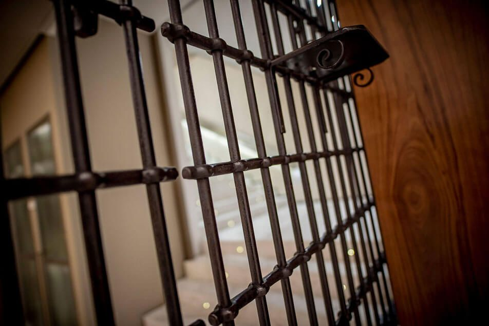 Edificio Beatriz Poco queda de aquel convento Convento de la Concepción Jerónima
Eleuterio Población Knappe arquitecto y responsable último de su edificación, decidió conservar la reja del convento
Casa del Pastor | Fuente Caños Viejos, 1942
el escudo más antiguo de Madrid en donde estuvo la Casa del Pastor
Casa del Pastor y el escudo más antiguo de Madrid miradormadrid.com
Casa del Pastor, su escudo heráldico y fuente de los caños Viejos
Corrala de Sombrerete | La Corrala calles de Sombrerete y Tribulete
con patio abierto a la calle de Mesón de Paredes
Faro de Moncloa miradormadrid.com
Faro de Moncloa Visitas Compra online
Corrala de Sombrerete | La Corrala calles de Sombrerete y Tribulete
Puerta de Guadalajara Calle Mayor
Puerta del Carmen (Pabellón de Zaragoza) Feria del Campo -googlemaps
Puerta del Carmen (Pabellón de Zaragoza) La Puerta del Carmen fue reproducida fielmente en 1956 para la Feria del Campo que tenía lugar en la madrileña Casa de Campo. el monumento formaba parte del pabellón de Aragón
Puerta del Carmen Zaragoza
Puerta del Carmen Zaragoza 2
Puerta de la Latina Ciudad Universitaria -googlemaps
Puerta de la Latina Ciudad Universitaria -memoriademadrid.es
Puerta de Bisagra (reproduce Toledo) Feria del Campo
antiguo pabellón de Toledo (su fachada reproduce la Puerta de Bisagra de esa ciudad)
en su interior se rodó una de las escenas de Clint Eastwood “Por un puñado de dólares”
Feria del Campo | Pabellones
Artículos Religiosos - Arte Sacro (ir anulando www.juancato.es ya no aparece)
Buscar.:
Chimenea de la antigua fábrica de cervezas Mahou en la calle de Amaniel, vista desde la calle de Quiñones.(1850)
Entornos y Plazas.:
Mariano Benlliure en Madrid (1862 - 1947.)
El rastro
Puerta del Sol
Puertas Alcalá y Toledo
remodelación de la Puerta del Sol
Puerta del Sol centro de la villa
Puerta del Sol Frontón del edificio de la Real Casa de Correos (actualmente Presidencia de la Comunidad de Madrid). En el tímpano vemos tres leones junto a un escudo real borbónico, de la época de Carlos III.
Historia de la Puerta del Sol
Puerta del Sol
Real Casa de Correos
Parque del Buen Retiro
Plaza Canalejas
Plaza de España
Plaza de la Villa
Plaza de Oriente
Plaza de Santa Ana una histórica plaza de Madrid, sin árboles
Puentes Manzanares
Establecimientos.:
Arte Sacro
Comercios con tradición
Librerías
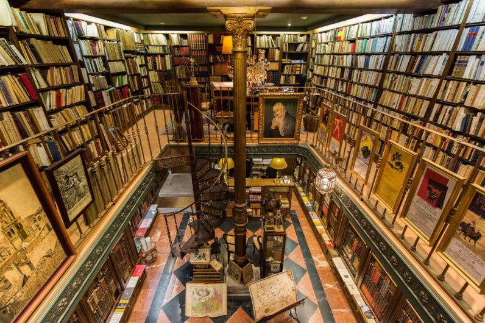 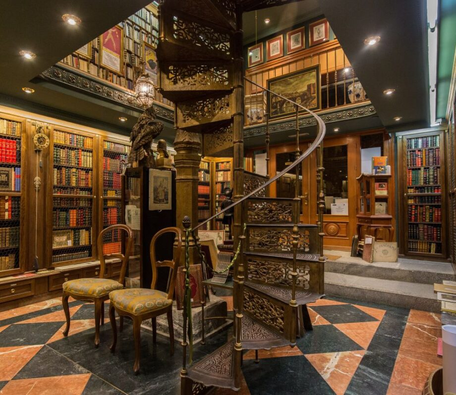
La librería Miguel de Miranda es una de las más bonitas de Madrid.
calle de Lope de Vega 19 Huertas
Pastelerías Madrileñas
Clásicos de la Repostería
Farmacias
Hoteles
Peluquerias
Salas de Cine
Centros Culturales.:
Auditorio y sala de exposiciones Paco de Lucía (Latina) Aluche
Auditorio y sala de exposiciones Paco de Lucía (Latina) Programa
Centro de Cultura Contemporánea Condeduque
Centro de Cultura Contemporánea Condeduque Sala de Exposiciones
Centro de Cultura Contemporánea Condeduque Programación Arte | Condeduque Madrid
Centro Cultural Emilia Pardo Bazán archivos barrrio Salamanca Plza Colón
Arranca el II Festival de Big Band de Latina con AP Big Band Aluche
ESPACIO MADOS C. del Conde de Xiquena, 12
Casa de Vacas - Exposiciones y Actividades Retiro
Exposiciones | Fundación Ibercaja
Conciertos | Cultura | Fundación Mutua
Infinito Delicias un nuevo modelo de hub que abrirá sus puertas a mediados de 2025. Ubicado en el barrio de Delicias, este laboratorio urbano de 2.700 metros cuadrados entrelaza innovación, arte, cultura y gastronomía.
Referente de innovación, alimentación sostenible y arte ciudadano
Fundación Carasso
Fundación Daniel y Nina Carasso
Creada en 2010, en honor a Daniel Carasso, fundador de Danone, y a su esposa Nina, la Fundación Daniel y Nina Carasso desarrolla su actividad en Francia y España.
Isaac Carasso el fundador del Imperio Danone inspirado en su pequeño hijo Daniel “Danón” – eSefarad
Nace Infinito Delicias un nuevo espacio de cultura e innovación con más de 2.000 metros cuadrados -timeout.es
Ganadores de los Premios Internacionales Holcim 2023
Europa 1- Premio Gold - España 2023 Infinito Delicias
EL 17. COMPOSICIÓN DE LA CASA DEL CONOCIMIENTO por Husos, Elii y Ultrazul
Infinito Delicias un nuevo espacio de cultura e innovación con más de 2.000 metros cuadrados -urbanity.one
Teatros.:
Abonoteatro.com
¿El plan perfecto? Teatro eldiario.es/socios
Teatros de Madrid: el más antiguo del mundo y otras curiosidades que no sabías
Teatros Madrileños
Teatro Marquina
abonoteatro.com
Teatro Pavón Uno de los primeros edificios plenamente Art Decó de Madrid, construido entre 1924-25 según planos de Teodoro Anasagasti.
Este arquitecto vasco se especializó en salas de cine y teatro, de las que sólo en Madrid construyó un buen puñado: el Real Cinema, el Monumental, el cine Fuencarral o el desaparecido Teatro Martín, entre otros.
Teatro Pavón C. de Embajadores, 9 zona Rastro googlemaps.com
Teatro Pavón Facebook mio | notas primo Florida
El corral de la Cruz (desaparecido, Teatro de la Cruz) [Alatriste]
El corral de la Cruz (Teatro de la Cruz el mas castizo de Madrid) [Alatriste]
Teatro del Príncipe (Hoy Teatro Compañia Nacional Teatro Clásico)
Teatro del Príncipe (anteriormente Corral del Príncipe y más tarde Teatro Español)[Alatriste]
Teatros de Madrid: el más antiguo del mundo y otras curiosidades que no sabías
Teatro Albéniz | Figuras recien colocadas
Teatro Albéniz | recupera siete figuras en su fachada
Teatro Albéniz | recupera siete figuras en su fachada 2º piso
Espacios escénicos municipales con los que cuenta la ciudad de Madrid: Teatro Español, Teatro Fernán Gómez, Teatro Circo Price y las Naves del Español de Matadero Madrid.
Estatuas y Esculturas .:
Parques, jardines y Fuentes (con Esculturas -enlaces mios)
Estatuas y monumentos
Estatuas ecuestres de Reyes
Parque del Oeste Paseo estatuas
Panteón de Hombres Ilustres
Antonio de los Ríos Rosas, Antonio Cánovas del Castillo, José Canalejas, José de Palafox, Francisco Castaños, Juan Prim y Manuel Gutiérrez de la Concha Destacan los sepulcros esculpidos por Mariano Benlliure.:
Práxedes Mateo Sagasta (1904) a José Canalejas (1915) y a Eduardo Dato (1928)
y Agustín Querol.: Cánovas del Castillo (1906)
Panteón de Hombres Ilustres de Madrid en el patio del panteón se encuentra una Estatua de la Libertad representada en la figura de una mujer esculpida en mármol de Carrara por el escultor Ponciano Ponzano en 1853 construida 26 años antes que la popular escultura neoyorquina realizada por el francés Frédéric Auguste Bartholdi La estatua de Ponzano forma parte de un mausoleo que acoge los restos de, entre otros, el político liberal Mendizábal el presidente de Las Cortes de 1841, Argüelles y el jurista Calatrava
Panteón de Hombres Ilustres | Pabellón de España Mirador Madrid
Panteón de Hombres Ilustres | Pabellón de España abc.es
Panteón de Hombres Ilustres | Pabellón de España de Madrid ubicado en el claustro de la Basílica de Atocha
dedicados a Práxedes Mateo Sagasta (1904) a José Canalejas (1915) y a Eduardo Dato (1928)
Estatua de la Libertad española | Ponzano | Panteón de Hombres Ilustres | Panteón de España
Estatua de la Libertad española | Ponzano frontón (o frontis) de la entrada principal del Congreso de los Diputados (1848)
Si os fijáis, a la izquierda, aparece la segunda versión de la Estatua de la libertad que el escultor realizó, junto con la del Panteón de Hombres Ilustres
Hay quien dice que la idea fue copiada desde Francia y exportada a EEUU, y luego patentada, haciendo multimillonarios a algunos mientras el pobre Ponciano murió en la pobreza.
Los leones del Congreso de los diputados reciben los nombres de Daoíz y Velarde, aunque originalmente se realizaron en representación de Hipomenes y Atalanta.
¿Cuál es el origen de los dos leones del Congreso de los Diputados?
El Panteón de Hombres Ilustres pasará a ser Panteón de España para reconocer también a mujeres | Patrimonio Nacional
En lo más alto del frontón de mármol, esculpido por Agustín Querol en la Biblioteca Nacional se puede observar una escultura de una mujer, representación de España, con una corona de laurel que colma de sabiduría a todo aquel que cruza las puertas de la Biblioteca bajo ella.
Las esculturas en la fachada de la Biblioteca Nacional
representa el triunfo de las artes, las ciencias y las letras
Monumento a Quevedo | Agustín de Querol mármol de Carrara, estuvo en glorieta de Alonso Martínez, trasladada en 1963 a la Glorieta de Quevedo
Monumento a Quevedo | Agustín de Querol (1902)
Glorieta de Quevedo
Monumento a Emilio Castelar (1873-1874) en el Paseo de la Castellana
Estatua en Paseo de la Castellana, que para algo estaba en el ala conservadora del movimiento. Realizado por Mariano Benlliure relieve de bronce en favor de la abolición de la esclavitud en las antiguas colonias españolas. –algo por lo que el político se destacó–, que recoge la figura de varios esclavos levantando sus cadenas rotas
La Abundancia | Museo de Historia de Madrid Antiguamente en la Plza de la Cebada
Endimión | Museo de Historia de Madrid Antiguamente en la Plza de Lavapiés
Endimión | Fuente de Lavapiés Museo de Historia de Madrid
Andrómaca hija de Aecio (Eetión), rey de Tebas, y mujer de Héctor, príncipe troyano que muere a manos de Aquiles | final del Paseo de Recoletos, en Colón
Un romano en la Gran Vía | autor Victorio Macho tiene museo en Toledo Gran Vía 60
Relieve del ático de la fachada oeste del Museo del Prado
"Fernando VII recibiendo el homenaje de las Bellas Artes" de Ramón Barba
fue terminado por Ponciano Ponzano en 1842
Muestra a Fernando VII en traje de gala de la Orden de Carlos III con gran detalle.
Cabeza olmeca y pirámide azteca: México lindo de Vallecas a Barajas artículo nº 8
Cabeza Olmeca del Ensanche de Vallecas
Cabeza Olmeca del Ensanche de Vallecas google.maps
Rana de la Fortuna regalo Casino Gran Madrid | Museo de Cera
La maldición de nueve edificios en España y las historias reales detrás de sus fantasmas
Estatuas en el cielo de Madrid
Monumento a los Hermanos Álvarez Quintero Parque de El Retiro
Monumento a los saineteros madrileños | es obra del escultor Lorenzo Coullaut-Valera
Inaugurado en 1913 en la Glorieta de San Vicente
actualmente en Plaza de los Chisperos de Chamberí desde 1932
Monumento a los saineteros madrileños Inaugurado en 1913 en la Glorieta de San Vicente
 Victoria Alada obra de Federico Coullaut-Valera autor del Monumento a Cervantes en plaza de España
o la ninfa que adorna la Rosaleda del Parque del Oeste
Victoria Alada obra de Federico Coullaut-Valera autor del Monumento a Cervantes en plaza de España
o la ninfa que adorna la Rosaleda del Parque del OestePlaza de España monumento dedicado a Cervantes con sendas estatuas ecuestres de Don Quijote y Sancho Panza. El monumento es de Lorenzo Coullaut Valera y Federico Coullaut Valera web.archive.org
Monumento al pueblo del dos de mayo de 1808 Aniceto Marinas en 1891 Plza España
Paseo escultural por Carabanchel: de estatuas clásicas a homenajes singulares
Las esculturas del parque de El Retiro
Estatuas y Fuentes Paseo del Prado

Niños con jarrón de Cibeles Paseo del Prado
Parque del Oeste Paseo estatuas
Estatua del Cabo Noval jardines del mismo nombre frente Paacio Real
grupo escultórico a "Los Tercios"
El Dragón | Gripho que formó parte del escudo de Madrid durante tres siglos
El Dragón | Gripho y el oso de la Fuente de Cibeles
El Dragón | Gripho y el oso de la Fuente de Cibeles desaparecieron
El misterioso Dragón | Gripho del escudo de Madrid
Dragón / Gripho (animal mitológico mitad águila, mitad león) por ser este dragón una de las señas más antiguas de la Villa. El otro elemento era una corona cívica.
Entre 1850 y 1967 el escudo de Madrid incluía un dragón y una corona cívica
Escudos de Madrid
Casa del Pastor, su escudo heráldico y fuente de los caños Viejos
Casa del Pastor | Fuente Caños Viejos 1942
el escudo más antiguo de Madrid en donde estuvo la Casa del Pastor
Fuente de la Fama, en el de Historia, Mantua Carpetanorum de Fosman,
Estatua de Cervantes y la cápsula del tiempo
Estatua San Isidoro - Biblioteca Nacional
Escultura del dios Dioniso-Baco en el templete elíptico del parque de El Capricho
Monumento a Isabel la Católica Paseo de la Castellana, 80
Monumento a Isabel la Católica Paseo de la Castellana, 80 | CESEDEN Y Escuela Ingenieros
Estatua de Felipe IV en la Plaza de Oriente
Estatua de Carlos III en la Puerta del Sol
Estatua de Felipe III en la Plaza Mayor de Madrid
Estatua de Felipe III en la Plaza Mayor de Madrid historia
El edificio de las cuadrigas Alcalá 16 -en principio eran doradas, teniendo que oscurecerlas en la guerra civil para no ser un reclamo de los aviones
Las cuadrigas de bronce, plomo y hierro recubiertas de latón dorado, en 1922, unas esculturas de bronce del escultor bilbaíno Higinio Basterra
Restaurado el monumento ‘Paloma de la paz’ del parque Tierno Galván de Madrid
Estatuas Ministerio de Agricultura | La Gloria y Los dos Pegasos | Glorieta de Atocha
Estatuas Ministerio Agricultura | La Gloria (Glorieta de Cádiz) Pegaso (Plaza de Legazpi)
Estatuas Ministerio Agricultura Los pegasos de Legazpi continuarán separados
Simbolos Masones en Madrid 1: Parque Enrique Tierno Galván, (1918-1986)
Simbolos Masones en Madrid 2: Pasillo Verde Ferroviario (PVF) camino iniciatico
Simbolos Masones en Madrid 3: Otros Simbolos en la ciudad
Estatuas Paseo del Prado
Estatuas Paseo de Recoletos
Estatuas Parque del Retiro googlemaps
Fuente del Faunito o del Fauno | Parque del Retiro
Fuente del Amorcillo o de Cupido | Parque del Retiro
'La fuente y el río', de Pablo Serrano C/ del Marqués de Villamagna | Serrano
Esculturas originales de las calles de Madrid
Índice de Monumentos de Madrid unaventanadesdemadrid.com
Las estatuas del cielo de Madrid
Venus emergiendo de las aguas | Parque de Pradolongo
Tres, escultura en bronce | Parque de Pradolongo
Esculturas emergentes conceptual o abstracta | Ampliación Parque de Pradolongo
Monumento Clara Campoamor Plza Guardia Corps | Centro Cultural Conde Duque
Madrid a través de sus esculturas
Quinta de Torre Arias "Diana y Endimión", una escultura de terracota
El Vecino Curioso estatua entre Mayor y Almudena
Los vecinos eternos de Madrid
Monumento a las víctimas del atentado contra Alfonso XIII
Monumento a las víctimas del atentado contra Alfonso XIII 31 de mayo de 1906
Monumento a Alfonso XII y su torre mirador
Infanta Isabel de Borbón “La Chata” Paseo de Rosales
Infanta Isabel de Borbón “La Chata” Paseo de Rosales | Parque del Oeste
Monumento nacional a los héroes de las guerras coloniales
Eloy Gonzalo "Cascorro" (1898) | El rastro
Autores.: LÓPEZ SALABERRY, José (Arquitecto)
MARINAS Y GARCÍA, Aniceto (Escultor)
Monumento a Simón Bolívar
Monumento a Simón Bolívar es.wikipedia
Campaña contra las estatuas de Simón Bolívar por “asesino de españoles”
José Tomás (escultor) | Esfinge en el Obelisco de la fuente Castellana
José Tomás (escultor) | fuente de los Galápagos (Retiro)
José Tomás (escultor) | fuente de los Galápagos (Retiro)
Fundación Juan March jardín con esculturas
“Accidente aéreo” Miguel Ángel Ruíz Beato (2005) hombre con alas colocado boca abajo
escultura de estilo neoclásico de bronce con pátina que la da el color verdoso.
Calle Milaneses 3, haciendo esquina con la Calle Mayor
El Ángel Caído del Retiro | Ricardo Bellver (1885)
Alfonso X el Sabio Biblioteca Nacional | José Alcoverro y Amorós (1892)
Cariátides - Palacio de Fomento (1899)
Museo de Escultura al Aire Libre P.º de la Castellana, 40
Museo de Escultura al Aire Libre hoy llamado Museo Arte Público
Museo Arte Público de Madrid antes Museo de Escultura al Aire Libre de la Castellana
Guía del Museo de Escultura al Aire Libre de La Castellana
guía en PDF del Museo publicada en 2002 por el Ayuntamiento de Madrid, cuyos autores son Eduardo Salas y María José Rivas.
Las estatuas de San Isidro y Santa María de la Cabeza relucen de nuevo sobre el Puente de Toledo
Iris es la nueva escultura de Jaume Plensa por el centenario de Telefónica
Iris | Jaume Plensa por el centenario de Telefónica - Distrito Telefónica
Julia | Jaume Plensa Plaza de Colón y Jardines del Descubrimiento
Julia | Jaume Plensa Mecenazgo fundacioncristinamasaveu hasta 2027
Suñol y Pujol, Jerónimo Escultor español -museodelprado.es
Jerónimo Suñol [1839-1902] -escultor Autor de.:
Estatua de mármol del Monumento a Colón de Madrid (1885)
Mausoleo del general Leopoldo O´Donnell obra de Jerónimo Suñol (1870) Salesas Reales
Jerónimo Suñol [1839-1902] | Monumento a Colón
Arturo Mélida (proyecto y pedestal) y de Jerónimo Suñol (estatua)
Taller de Cantería, Casa de Campo
Taller de Cantería, Casa de Campo visita guiada
Taller de Cantería, Casa de Campo La Casilla, antiguas caballerizas monarcas PDF
Taller de Cantería, Casa de Campo Junta Moncloa-Aravaca
Taller de Cantería, Casa de Campo | Almacén Paracuellos del Jarama Patrimonio escondido de Madrid
Taller de Cantería, Casa de Campo madridciudadaniaypatrimonio.org
Taller de Cantería, Casa de Campo Fuente de Callao
Paseo por las nuevas marcas de cantería escondidas en Madrid: de las tijeras de Jesús del Pozo a las flechas de Diana
Las marcas de cantería ocultas en Madrid
Las marcas de cantería ocultas en Madrid mapa googlemaps
Talleres del Retiro (I) PDF
Talleres del Retiro (II) | Taller de Cantería PDF
Escuela de Cantería calle Ancora, Atocha (Actualmente Agencia para el Empleo)
La Sabiduría sobre el Pegaso derecho
La Agricultura junto al Pegaso izquierdo, todas en Mármol de Carrara
Manolo Valdés | Ariadna o la Dama del Manzanares Parque Lineal del Manzanares
Ricardo Bofill | La Atalaya una loma-plataforma en forma de pirámide de madera de 21 metros de altura con escaleras laterales que encaminan hacia ella, diseñada por el arquitecto Ricardo Bofill y conocida como La Atalaya.
Manolo Valdés | Ariadna IV formaría parte de un conjunto escultórico integrado por cabezas o rostros de mujeres, al que se suman las tres ubicadas en la zona de facturación de la T4 del Aeropuerto Madrid-Barajas.
La Realista, La Coqueta y la Soñadora, así se denomina esta trilogía, se ubicaron en 2004
Gustavo Torner | Centenario en la Academia
Pintor y escultor, diseñador de interiores –ha diseñado algunas salas del Museo del Prado, de la Academia de BBAA, tiendas de la firma Loewe…–, decorador para obras de teatro, figurinista… fundador, junto a Fernando Zóbel y Gerardo Rueda, del Museo de Arte Abstracto Español de Cuenca

Autor Reflexiones (1972). Plaza de “los cubos”

Plaza-escultura (1972). Museo de Escultura al aire libre

Hermes | Rafael Canogar Carabanchel monumental escultura: de acero, más de cinco toneladas Parque de Comillas confluencia entre las calles Antonio Leyva con Josefa Fernández Buterga. El Museo de Arte Contemporáneo de Madrid adquirió la obra de Rafael Canogar
Hermes | Rafael Canogar La escultura estrena ubicación permanente en Carabanchel
La Mariblanca Réplica en el Museo de Historia y Puerta del Sol
La Mariblanca Estatua y fuentes de la Mariblanca
La Mariblanca La Puerta del Sol a comienzos del siglo XIX, con la fuente de la Mariblanca y la iglesia del Buen Suceso
Mariblanca Estanque de Recoletos -artedemadrid
Mariblanca Estanque de Recoletos -diario.madrid.es
Fuentes y estanques del Arquitecto Manuel Herrero Palacios
Farolero Imprenta Municipal. Obra de Félix Hernando de 1999 y originalmente estuvo instalada en la Plaza del Carmen
Real Sacramental de San Lorenzo y San José
Real Sacramental de San Lorenzo y San José (1851) barrio de Carabanchel
Cerca estuvo el Cementerio General del Sur, en el llamado Alto de Opañel, en una zona hoy ocupada por viviendas y áreas deportivas. Al parecer su funcionamiento fue un desastre y debido a su abandono los fallecidos recién enterrados servían de alimento a perros y pájaros. También resulta curioso el que este cementerio fuera conocido como el de los Ajusticiados, ya que en él se enterraba a los reos ajusticiados en la Plaza de la Cebada.
Sacramental San Isidro
Tumba Escultura con tres virtudes teologales | Sacramental San Isidro
Virtudes teologales, tres.: la fe, la esperanza y la caridad.
Grupo escultórico de San Isidro y el Ángel
Tumba Escultura con tres virtudes teologales | Sacramental San Isidro
Cementerio Sacramental de San Isidro – Madrid a 360º
Cementerio Sacramental de San Isidro – PDF
La huella masónica del cementerio de San Isidro de Madrid
Panteón Guirao | Sacramental de San Isidro es.wikipedia
Sacramental de San Justo
Carabanchel, junto a la de San Isidro. Se dice que es "la más literaria de las necrópolis madrileñas".
En ella encontrarás el mausoleo de Campoamor y el Panteón Ilustre de la Asociación de Escritores y Artistas españoles que, entre otros, acoge las tumbas de los hermanos Alvarez Quintero, Gómez de la Serna, Espronceda y Larra. Y el pintor Eduardo Rosales
Sacramental de San Isidro esmadrid.com
Sacramental de San Isidro pasionpormadrid.com
Panteón de Hombres Ilustres Mirador Madrid
Panteón de Hombres Ilustres | Sacramental de San Isidro
Cementerio de la Almudena

CAPILLA del Cementerio Nuestra Señora de la Almudena Modernismo
En su cúspide, Fausto

Arquitectura y botánica del cementerio de la Almudena
Cementerio civil de La Almudena es.wikipedia
Cementerio La Almudena | Propileo es.wikipedia

Cementerio La Almudena | Pórtico / Propileo
Cementerio Nuestra Señora de la Almudena
Cementerio civil | 150 Aniversario de la I República Española
Cementerio civil de La Almudena | Visitas guiadas 3€
Cementerio civil de La Almudena | Personalidades es.wikipedia
Cementerio Civil | Almudena es.wikipedia
Los presidentes de la Primera República, Estanislao Figueras, Francisco Pi y Margall y Nicolás Salmerón. El fundador del Partido Socialista Obrero Español y de la Unión General de Trabajadores, Pablo Iglesias; los líderes socialistas Julián Besteiro y Francisco Largo Caballero; la dirigente comunista Dolores Ibárruri; y el fundador del sindicato Comisiones Obreras y dirigente comunista Marcelino Camacho. Escritores y filósofos como Pío Baroja, José Laín Entralgo, Xavier Zubiri y Almudena Grandes. Pedagogos como Francisco Giner de los Ríos, Manuel Bartolomé Cossío, Alberto Jiménez Fraud o el filósofo y también pedagogo Fernando de Castro y Pajares, fundador de la Asociación para la Enseñanza de la Mujer (1870). Y otras personalidades, como el urbanista Arturo Soria; el zoólogo Antonio Machado Núñez; el escultor Emiliano Barral; el artista Wolf Vostell; el poeta Marcos Ana; y una larga lista en la que están Gumersindo de Azcárate, Urbano González Serrano, Jaime Vera, Américo Castro, Francisco García Lorca, Concepción García Lorca, Blas de Otero, Andrés Saborit, Enrique Lister, Julián Grimau, Eduardo Benot, Antonio Espina o Alfredo Flórez.
El rastro de la Primera República Española [1873-1874] a 150 años de su proclamación
Mausoleo de Francisco Pi y Margall | Cementerio civil de Madrid
Nicolás Salmerón se encuentra justo al lado del anterior
Monumento a Emilio Castelar en el Paseo de la Castellana
Cementerio civil de la Necrópolis del Este | Almudena
Estanislao Figueras (primer presidente de la primera república española
Nicolás Salmerón (tercer presidente republicano español)
mausoleo de Pablo Iglesias , primer Presidente PSOE
Julián Besteiro presidente de las Cortes durante la Segunda República, y Partido Socialista Obrero Español y UGT
Francisco Giner de los Ríos creador y director de la Institución Libre de Enseñanza (ILE)
Francisco Largo Caballero dirigente del Partido Socialista Obrero Español (PSOE) y la Unión General de Trabajadores (UGT). Desempeñó la presidencia del Consejo de Ministros de la Segunda República entre septiembre de 1936 y mayo de 1937.
Jaime Vera López 1877 pertenece al grupo prefundacional del PSOE, después se une Pablo Iglesias
Pío Baroja y Nessi escritor español de la generación del 98
José Laín Entralgo formó parte, junto con Santiago Carrillo, José Cazorla Maure y Federico Melchor Fernández, del Comité Nacional de Enlace de unificación con la UJCE de la que surgieron las Juventudes Socialistas Unificadas. En aquel momento los cuatro ingresarían en el Partido Comunista de España (PCE)
Xavier Zubiri Filósofo, Blas de Otero uno de los principales representantes de la poesía social y la poesía intimista de los años cincuenta
Dolores Ibarruri
Julián Grimau político comunista español, condenado a muerte y ejecutado por la dictadura franquista (proceso Grimau)
Enrique Lister político y militar español de ideología comunista, afiliado al Partido Comunista de España (PCE). Participó en la guerra civil española como oficial del Ejército Popular de la República y alcanzó el grado de mayor general del Ejército Rojo de la URSS durante la Segunda Guerra Mundial
Cementerio de la Florida madrida360.es
En las celebraciones del 2 demayo en Madrid, durante este mes y el de junio se puede visitar el Cementerio de la Florida los sábados por la mañana, un lugar cerrado el resto del año
Cementerio de la Florida googlemaps
Panteón de Hombres Ilustres Mirador Madrid
Panteón de Hombres Ilustres | Sacramental de San Isidro
Panteón de Hombres Ilustres de Madrid, ubicado en el claustro de la Basílica de Atocha
dedicados a Práxedes Mateo Sagasta (1904), a José Canalejas (1915) y a Eduardo Dato (1928)
Panteón Guirao | Sacramental de San Isidro es.wikipedia
Estatuas Ecuestres
Esculturas raras: cañas que silban, un dragón, una ola de vías y el balón de Luis Aragonés
Escultura del madroño en Carabanchel terrenos antiguo Convento de San Francisco
Los guardianes de los tejados | Estatuas
Felipe III | Plaza Mayor
Felipe IV | Plaza de Oriente
Carlos III | Puerta del Sol
General Martínez Campos | Parque de El Retiro
Alfonso XII | Estanque de El Retiro
Caballo de Espartero | entre O'Donnell y Alcalá
Simón José Antonio de la Santísima Trinidad Bolívar y Palacios Ponte-Andrade y Blanco, más conocido en los libros de Historia como Simón Bolívar | Parque del Oeste
Monumento a Miguel de Cervantes, Don Quijote y Sancho Panza | Plaza de España
Marqués del Duero | Plaza de Gregorio Marañón
Los portadores de la antorcha | facultades de Farmacia, Medicina y Odontología
Busto al pintor Francisco Pradilla y Ortiz en Rosales
Aniceto Marinas Velázquez | EloyGonzalo | el Sagrado Corazón del Cerro de los Angeles, Monumento AlfonsoXII (esculturas base) | Héroes Dos de Mayo
Aniceto Marinas
Mariano Benlliure
Mariano Benlliure escultor realista
Mariano Benlliure – El placer de esculpir 75 Aniversario
Mariano Benlliure 2022 programación
Benlliure en Madrid Galeria imágenes
Panteón de Hombres Ilustres de Madrid, ubicado en el claustro de la Basílica de Atocha
dedicados a Práxedes Mateo Sagasta (1904), a José Canalejas (1915) y a Eduardo Dato (1928)
Panteón de Hombres Ilustres Mirador Madrid
Escultura dedicada a Goya | Museo del Prado
Estatua de Goya | Museo del Prado
Un pintor para el Prado | Julio López Hernández | Museo del Prado
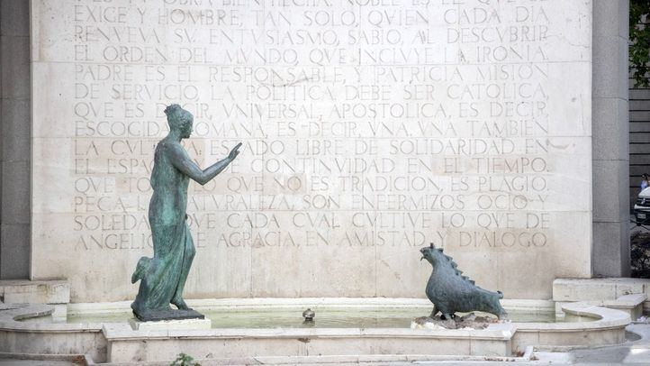
Monumento a Eugenio D'Ors (restaurado) filósofo en el Paseo del Prado (abrir en Firefox)
Obra proyectada por el arquitecto Víctor d’Ors hijo de Eugenio
Monumento al teniente Ruiz de la plaza del Rey (1891)
Monumento al teniente Ruiz de la plaza del Rey (1891) aspecto 1966
Fundación Mariano Benlliure
Divino Cautivo es.wikipedia
Divino Cautivo artedemadrid
Divino Cautivo Cárcel de Porlier
Monumento al general Martínez Campos retiromania.com
Mariano Benlliure Gil Google Maps localizaciones
Benlliure en Madrid gacetinmadrid.com
Benlliure en Madrid comunidad.madrid
Mariano Benlliure – El placer de esculpir 75 Aniversario
Benlliure el gran escultor que se consideraba “un obrero, un picapedrero”
Mapa en Google maps con localizaciones arte
• Historia de Madrid | Museos de Madrid.:
Rutas con Historia
Ruta por el Madrid medieval
Historia de Madrid | Facebook
Historia de Madrid JP Urbi | Facebook
Ruta por la historia del Madrid árabe: de la ciudad amurallada a la antigua morería en el barrio de La Latina
"Mantua Carpetanorum" de Gregorio Fosman y Medina
primera copia del plano de Pedro Texeira
Plano de Texeira (1656) ArcGIS activar en "Abrir en Map Viewer Classic"
Cuando Madrid era Mayrit: Orígenes y desarrollo de una ciudad andalusí
MiraMadrid App Mira Madrid rutas geolocalizadas sobre puntos en los que muestra fotografías antiguas, planos de edificios, tarjetas postales, noticias de prensa y la información sobre Madrid
Puedes pasear por el Madrid de 1936-1939 y ver exactamente dónde se tomaron históricas fotos de Capa, Taro y Chim en Madrid google.com/maps
MiraMadrid App Ayto. Madrid play.google.com
Madrid Antiguo tarda en cargar, buenas fotos
Biblioteca digital memoria de Madrid memoriademadrid.es
La biblioteca digital memoriademadrid recorre la evolución de Madrid desde 1890 con más de mil postales geolocalizadas
Biblioteca digital memoriademadrid
Nace el Archivo Histórico Provincial de Madrid
Archivo Histórico Provincial de Madrid
Catálogo digital de la Fototeca - Instituto del Patrimonio Cultural de España | Ministerio de Cultura y Deporte
Fototeca del Instituto del Patrimonio Cultural de España
Archivos de la Comunidad de Madrid -Fondos y colecciones documentos de libre acceso
ARCHIVO GENERAL DE LA VILLA DE MADRID - Archivos de la Comunidad de Madrid
Portal de Archivos de la Comunidad de Madrid
Archivo Histórico Digital de la Biblioteca de la UPM
Mapas históricos de Madrid EsconD:
Fondo Coam Fondos y legados arquitectura
Fondo Lladó Archivo Luis Lladó está formado por 5879 fotografías
El CSIC difunde el archivo digitalizado del fotógrafo Luis Lladó
Fotos antiguas de Madrid
Imágenes del viejo Madrid viejo-madrid.es
Patrimonio Histórico de Madrid monumentamadrid.es
40 joyitas de Madrid
Los 2.203 edificios de Madrid que destruyeron las bombas de Franco
Nueve joyas arquitectónicas imponentes de Madrid que se perdieron para siempre en la Guerra Civil
La guerra olvidada de Madrid: los edificios destruidos por los bombardeos de los que nadie se quiere acordar
Madrid modernista un Madrid poco conocido en 9 rutas
Planes findes
Ruta palaciega por el Barrio de Jerónimos madrida360.es
Rutasconhistoria.es - Guias Madrid
Paseo Atocha | Las cabezas de Antonio López | Basílica de Atocha | Panteón de los Hombres Ilustres | Real Fábrica de Tapices
La reconquista que nunca fue
Un rápido paseo por la historia de Madrid en imágenes…
Guerra en Madrid artículos sobre la Guerra Civil en Madrid
Fotos antiguas Madrid fuenterrebollo.com
Fotos antiguas Madrid forocoches.com
Los madriles -Twitter Fotos antiguas Madrid
Fotos antiguas Madrid Historia Urbana de Madrid
Viejo-madrid.es -fotos antiguas Madrid
Memoria de los Barrios: redescubriendo el pasado de Madrid
Caminemos Madrid Blog sobre Madrid
Pasión por Madrid
Historia de la “mala praxis subterránea” en Madrid:
Canal Isabel II | Historia canaldeisabelsegunda.es
 Ponton de la Oliva
Ponton de la OlivaSituada en el río Lozoya, es una de las obras emblemáticas de Canal de Isabel II, pues marca el inicio de la traída de aguas a Madrid. Fue proyectada por dos célebres ingenieros, Juan Rafo y Juan de Ribera, y su ejecución técnica, a cargo del ingeniero Lucio del Valle, estuvo repleta de complicaciones. El principal problema surgió al comprobarse que la presa se había cimentado sobre terreno arcilloso y yesífero. A pesar de sus múltiples esfuerzos, no se encontró remedio para solucionar los problemas de filtraciones y socavaciones que se producían.
 Presa El Villar
Presa El VillarEn 1869 comenzaron las obras para la construcción de esta presa situada en el municipio de Puentes Viejas
El Villar fue la primera presa de arco de gravedad que se construyó en Europa y la más elevada en España.
 Primer depósito
Primer depósito Fuente primer depósito
Fuente primer depósitoCampo de Guardias ubicado en la calle Bravo Murillo, fue el primer depósito enterrado de Canal. Su fachada está decorada con una fuente ornamental que alberga una alegoría del río Lozoya y fue ejecutada en 1858 a cargo de Sabino de Medina

Primer Depósito Elevado Parque Ríos Rosas, C/ de Sta Engracia, 125


Segundo Depósito Elevado Pl. Castilla 9
Cuarto Depósito C. Joaquín Bau 5 (zona Plaza Castilla/Mateo Inurria)
Canal Isabel II Recorrido histórico por los depósitos de agua de Madrid
Canal Isabel II El marqués contra el Canal: la 'guerra del agua' que llevó la electricidad a Madri
Canal Isabel II | Historia x.com
Canal Isabel II | Historia es.wikipedia
El teatro más antiguo del mundo | curiosidades de los teatros de Madrid
Dragón | Gripho (animal mitológico mitad águila, mitad león) por ser este dragón una de las señas más antiguas de la Villa. El otro elemento era una corona cívica.
Entre 1850 y 1967 el escudo de Madrid incluía un dragón y una corona cívica
Gripho Animal mitológico cuerpo de león con cabeza, pecho, alas y garras de águila
El Dragón | Gripho que formó parte del escudo de Madrid durante tres siglos
El Dragón | Gripho que formó parte del escudo de Madrid durante tres siglos 2
El Dragón | Gripho y el oso de la Fuente de Cibeles
El Dragón | Gripho y el oso de la Fuente de Cibeles desaparecieron
Grifo Animal mitológico cuerpo de león con cabeza, pecho, alas y garras de águila
Casa del Pastor, su escudo heráldico y fuente de los caños Viejos
Casa del Pastor | Fuente Caños Viejos, 1942
el escudo más antiguo de Madrid en donde estuvo la Casa del Pastor
¿Qué significan las siete estrellas de la bandera de la Comunidad de Madrid?
Bandera de la Comunidad de Madrid
Escudo de Madrid vigente desde mediados del XIX hasta 1967
Escudo de Madrid wikipedia.org
Dragón / Gripho (animal mitológico mitad águila, mitad león) por ser este dragón una de las señas más antiguas de la Villa. El otro elemento era una corona cívica.
Entre 1850 y 1967 el escudo de Madrid incluía un dragón y una corona cívica
Escudos de Madrid madrid.es
Casa del Pastor, su escudo heráldico y fuente de los caños Viejos
Casa del Pastor | Fuente Caños Viejos 1942
el escudo más antiguo de Madrid en donde estuvo la Casa del Pastor
El Ayuntamiento de Madrid presenta su nueva identidad visual de forma inesperada - Gràffica
El Reglamento de Protocolo y Ceremonial del Ayuntamiento de Madrid y el logotipo de la Villa | Arte en Madrid
Historia de los escudos de Madrid. (I) Siglo XII artedemadrid
Historia de los escudos de Madrid. (II) 1212 artedemadrid

Bandera de la Villa de Madrid artedemadrid
El 23 de febrero de 1989 fue publicado en el Boletín Oficial del Ayuntamiento de Madrid el Reglamento de Protocolo y Ceremonial.
En su Título I que trata Sobre la Villa de Madrid, sus tratamientos, títulos, atributos y sus usos, el Artículo III describe el Escudo de Madrid:
«El Escudo de Madrid consta de los siguientes componentes heráldicos: en campo de plata, un madroño de sinople, terrazo de lo mismo, frutado de gules, y acotado de oso empinante de sable y bordura de azur, cargada de siete estrellas de plata de seis puntas; al timbre, corona real antigua.»
A continuación, el Artículo IV, indica que «La Bandera de la Villa de Madrid se compone del escudo …, centrado sobre color carmesí»
Los vestigios de la legalidad republicana todavía persisten | Escudo Republicano
Farola de la República que ilumina el Palacio Real
Farola republicana en el Palacio Real
Casa del Pastor y el escudo más antiguo de Madrid miradormadrid.com
Casa del Pastor, su escudo heráldico y fuente de los caños Viejos
Corrala de Sombrerete | La Corrala calles de Sombrerete y Tribulete
con patio abierto a la calle de Mesón de Paredes
Rutasconhistoria.es - Guias Madrid
"Gatos" a los de Madrid
Un Gato por Madrid -Historia
¿Por qué se les llama gatos a los madrileños?
Historias matritenses
Los Origenes de Madrid
Plaza del Guá -guerra civil web.archive.org-->secretosdemadrid.es
El edifico más alto de Madrid, el de Telefónica, era el centro de los proyectiles disparados desde el cerro Garabitas y los que fallaban, caían en la plaza del guá, la vecina Plaza de Pedro Zerolo, antigua Plaza de Vázquez de Mella y que por entonces se llamaba Plaza de Ruiz de Zorrilla en honor al político republicano
Las historias de majos, chisperos y manolos | a pedradas entre pandillas
Casquerías en Madrid: pasado y presente
Los tranvías en la Puerta del Sol (1) jardineras a caballo (pulsar centros para imagenes)
Foto desde el lado Mayor, tomada en 1899 puesto que ya está electrificada la continuidad hacia Pozas. Los demás tranvías, de jardinera, son de tracción de sangre, al fondo a la izquierda los del barrio de Chamberí, cruzando la plaza los tranvías de Estaciones y Mercados, y a la derecha el tranvía a los Carabancheles y Leganés
Los tranvías en la Puerta del Sol (2)Tranvía de sangre (pulsar centros para imagenes)
Coche simón Precursor del Taxi El coche simón fue un carruaje diseñado a mediados del siglo XVIII por el español Simón Tomé Santos. En Madrid se denominaba en el siglo XIX así a cualquier coche de caballos susceptible de ser alquilado para transporte de personas por espacio de medio día.
¿Por qué todas las calles de Madrid empiezan a numerarse desde la Puerta del Sol?
A partir del 1835, se estableció que el nacimiento y numeración de las calles partiría desde el punto más próximo a la Puerta del Sol y que los números pares se situarían en la acera derecha y los impares en la izquierda.
José Vizcaíno, Marqués viudo de Pontejos, el primer alcalde constitucional de Madrid.
Pandillas de Madrid: ¿Madrid es una ciudad segura?
traducción de https://www.themakingofmadrid.com
Los Mentideros de la Villa Siglo de oro XVII
Casa de Socorro Alberto Aguilera 20 | Arquitecto Luis Bellido
Las Casas de Socorro se crearon en 1858
Casas de Socorro del siglo xix en España
::: MEMORIA DE MADRID ::: Colecciones
::: MEMORIA DE MADRID ::: Blog
Cuartel de San Gil
Revista Madrid Histórico
Número 95 (Septiembre – Octubre 2021) | Revista Madrid Histórico
Madrid, nido de espías
Antonio Joli | Vista de la calle de Alcalá de Madrid (1750)
Exposición Los 20 del XX. Un garbeo por Madrid CAM 14 enero 2024
Quinquis: un vistazo rápido a las barriadas españolas de los 80

Iglesia de San Cayetano (Churriguera y Pedro de Ribera)
EL MADRID DE PEDRO DE RIBERA. I
Ribera con José de Churriguera y Teodoro Ardemans; son los arquitectos que forman el grupo denominado el Barroco Castizo peyorativamente
Ermita de la Virgen del Puerto (1716-18)
Iglesia de San José

Portada del Palacio de los Marqueses de Perales
EL MADRID DE PEDRO DE RIBERA. II

Portada del Palacio de los Marqueses de Miraflores

Portada del Hospicio (actual Museo de Historia de Madrid)

Fuente de la Fama (Museo de Historia de Madrid)

Cuartel del Conde Duque
Portada de la Capilla del Monte de Piedad (1733) Puente de Toledo (1732)
Iglesia de San José
Museo de Historia de Madrid | Pedro Ribera (Puerta Toledo, Cuartel Conde Duque, Portada Monte y Piedad) C/ Fuencarral 78
Situado en uno de los grandes edificios del barroco madrileño, el antiguo Hospicio de San Fernando Maqueta de Madrid de León Gil de Palacio, realizada en 1830, la Alegoría de la Villa de Madrid de Francisco de Goya, la Virgen con San Fernando de Luca Giordano, la colección de Porcelana del Buen Retiro, la colección de cartografía histórica, el conjunto de la casa Mesonero Romanos, los objetos del taller del artista Gutiérrez Solana o la colección de fotografías históricas.

Museo de Historia de Madrid Maqueta de Madrid de León Gil de Palacio (ingeniero y cartógrafo) realizada en 1830
modelo cartográfico de grandes dimensiones que representa el Madrid del siglo XIX, considerado uno de los documentos cartográficos más precisos de la época
Museo de Historia de Madrid | Paseo
Museo de Historia de Madrid Puerta de Pedro de Ribera
Museo de Historia de Madrid Portada de la fachada del Real Hospicio del Ave María y San Fernando, año 1900 (Pedro de Ribera)
Museo de Historia de Madrid | Inclusa Real Hospicio de San Fernando
Así será el nuevo museo que nos hará recorrer el Madrid ilustrado del siglo XVIII La transformación del Palacio de El Capricho en un museo ofrecerá un recorrido por la vida y la cultura de la nobleza ilustrada de la capital
Museos Municipales de Madrid Canal Youtube
Museos de Madrid: visita virtual por los Museos | Guía Repsol
Francisco Pradilla (1848-1921) Video Museo de Historia de Madrid
Museo Arqueológico Regional Alcalá de Henares
Museo de San Isidro, los Orígenes de Madrid miradormadrid.com
Museo San Isidro | Museo de los Orígenes Plaza San Andrés 1
El Patio renacentista de la Casa de San Isidro
Las esculturas del Fernán Gómez, en el Museo de San Isidro
Museo Nacional de Artes Decorativas C/ Montalbán Nº 12 (Retiro)
Museo Nacional de Artes Decorativas historia edificio
Museo del Romanticismo | Ministerio de Cultura
Museos Municipales de Madrid | visitas virtuales -youtube
Imprenta Municipal de Madrid madrid.es
Imprenta Municipal de Madrid Callede Concepción Jerónima 15
Portada barroca del Monte de Piedad | Pedro Ribera antigua

Fundación Montemadrid es la marca bajo la cual se presenta la Fundación Obra Social y Monte de Piedad de Madrid
Rutasconhistoria.es - Guias Madrid
¿Por qué se les llama gatos a los madrileños?
"Gatos" a los de Madrid
Un Gato por Madrid -Historia
Historias matritenses
El agua de Madrid | Turismo Madrid
Historia del abastecimiento de agua en Madrid - Eadic
Palacio del Conde de Tepa el Viaje de Agua de la Castellana c/ de San Sebastián 2
Palacio del Conde de Tepa el Viaje de Agua de la Castellana c/ de San Sebastián 2 -artedemadrid
La Avda. Cardenal Herrera Oria se conoció popularmente como Carretera de La Playa
Madrid Medieval
Ruta por la historia del Madrid árabe: de la ciudad amurallada a la antigua morería en el barrio de La Latina
Cerca de Felipe II que no entren apestados intentando evitar epidemias
Cerca de Felipe IV rodeó la ciudad de Madrid entre 1625 y 1868
Los restos hallados en Ópera son de la muralla cristiana del siglo XII
Murallas, Cercas y Puertas de Madrid
10 murallas desconocidas de Madrid
Plan especial de protección antiguas murallas árabe y cristiana
historia 5 Murallas y Cercas
Muralla Árabe S. IX-XII
Muralla Cristiana S. XII-XV
Cerca del Arrabal S. XV-XVI
Cerca de Felipe II S. XVI-XVII
Cerca de Felipe IV S. XVII-XIX
XXIX FESTIVAL DE ARTE SACRO | 2019
Un paseo junto al Manzanares, desde el puente de Toledo a la pasarela de Arganzuela obra de Dominique Perrault
Historia urbana Madrid -blogspot.com.es
Madrid Histórico
Mapa de Madrid 1695
Cuando Madrid multiplicó de golpe por ocho su territorio al absorber 13 municipios
Entre 1948 y 1954 se anexionaron a Madrid Aravaca, Barajas, Canillas, Canillejas, Carabanchel Alto, Carabanchel Bajo, Chamartín, El Pardo, Fuencarral, Hortaleza, Vallecas, Vicálvaro y Villaverde.
Barrio de Comillas encuadrado en Carabanchel Bajo
Antes de la Guerra civil española, en los terrenos del actual Parque de Comillas, se produjo en 1935 un histórico mitin de Manuel Azaña
que según algunas crónicas llegó a concitar cerca de medio millón de personas. En este enlace se pueden ver imágenes del barrio inmediatamente antes de la Guerra Civil.
Una vez acabada la Guerra Civil tiene lugar, en los años cuarenta, la urbanización de la zona, cuyos terrenos pertenecían entonces al municipio de Carabanchel Bajo.
Para la construcción del barrio, la dictadura franquista utilizó a presos políticos encuadrados en batallones de trabajadores forzados.
La prensa de la época se refería al destacamento penal donde estaban recluidos como «el campo de concentración de Comillas» por la dureza de sus condiciones de internamiento, aunque la distinción terminológica entre campos de concentración y meros centros de detención muchas veces no estaba clara.
¿A qué barrio actual de Madrid corresponde el antiguo barrio de la Inclusa ?
Vivir y Morir en los Barrios Bajos del Sur de Madrid (1893-1914)
barrios bajos situados al sur de la ciudad. Estos estaban incluidos en 3 distritos: Latina, Inclusa y Hospital
los barrios del antiguo arrabal sur que en esa época estaba en proceso de crecimiento, determinado por el planeamiento del Ensanche Sur y la fuerte presencia del ferrocarril Santa Maria de la Cabeza, Gasómetro, Peñuelas, Imperial etc., que corresponde al actual distrito de Arganzuela
Los barrios bajos de Madrid en el siglo XIX. Memorias del campo a la ciudad
Barrio de las Cambroneras
Barrio de las Injurias Barrio de las Peñuelas
La desromantización de las históricas barriadas obreras. De los bajos fondos a la toma de conciencia
Fundación Anselmo Lorenzo, archivo histórico de la CNT y espacio de eventos libertarios, y un poco más arriba el Ateneo La Maliciosa
Expósito (recién nacido) La costumbre de abandonar a los recién nacidos es común en muchas culturas. Es célebre la costumbre espartana de exponer a los más débiles en el Apotetas (lugar de abandono), al pie del monte Taigeto. La costumbre romana era depositar a todos los niños en el suelo nada más nacer: si el padre decidía recogerlo, lo aceptaba como suyo; si no, el niño se abandonaba, y cualquiera podía recogerlo.
Expósitos en España Para su recepción, había establecidas inclusas en las principales ciudades de España y casas generales en las capitales que recibían niños de las casas subalternas. En estas casas se emplazaba el torno de los niños expósitos con apertura al exterior en el que los padres exponían a sus hijos de forma anónima haciendo en el momento sonar una campana
Inclusa Real Hospicio de San Fernando | Museo de Historia de Madrid
La Inclusa de Madrid. Su historia y el curioso origen de la palabra «inclusa»
La Inclusa de Madrid. Su historia y el curioso origen de la palabra «inclusa»
nº 66 de la calle Mesón de Paredes, situado pared con pared a espaldas del Colegio de la Paz, que daba a la calle Embajadores. El Colegio de la Paz, había sido fundado por la Duquesa de Feria, Ana Fernández de Córdoba en 1679, para acoger a mujeres y niñas menesterosas.
La Inclusa de Madrid. Su historia y el curioso origen de la palabra «inclusa»
Memoria historica sin limpiar
La Fuentecilla monumento dedicado a FERNADO VII el más felón de todos los Borbones
Diego de León un golpista que pretendió el secuestro de Isabel II junto a O'Donnell y de la Concha, fue fusilado por golpista.
Tiene al igual que O'Donell una calle dedica a su memoria.
Con un posterior Golpe de Estado, dirigido por Narváez y de la Concha acabarían con el movimiento progresista de Espartero. Narváez tiene también otra calle enalteciendo el golpismo reaccionario
Puerta Cerrada, una cruz “Fui sobre agua edificada, mis muros de fuego son”
El efímero arco del triunfo que levantó Madrid para recibir al Rey Alfonso XII
Puertas y Portillos de Madrid
Arco para conmemorar la entrada de Alfonso XIII en Madrid (desaparecido)
Puerta de Guadalajara en la Calle Mayor (desaparecida) - calle Mayor 46
Puerta de Guadalajara (desaparecida)
La entrada triunfal de Ana de Austria | arcos efimeros calle mayor
Puerta de Felipe IV o de Mariana de Neoburgo
Puerta del Ángel Por esta antigua puerta no solo se accedía a la Casa de Campo, sino a los caminos que llevaban a los pueblos del Norte como.: Pozuelo, Húmera, Boadilla etc. Y principalmente a los Pozos de la Nieve que estaban en el lugar que ahora ocupa la Piscina Municipal de El Lago.

antigua cárcel de Ventas: con la enorme resolución de cada foto se puede ver hasta el Centro Colón con nitidez, el viejo Palacio de Deportes, la Concepción y sus "colmenas",M30 en ciernes, Plaza de Toros de las Ventas, el Eva Perón, incluso Hortaleza (1974,Archivo Bagüés,BNE)
Quinta del Sordo Goya, el butronero y el final de la ciudad
Monasterios | Iglesias | Capillas .:
Iglesias | Capillas .: enlaces
Convento de San Felipe el Real (desaparecido, fue Mentidero de la Villa)
Convento de San Felipe el Real (desaparecido, fue Mentidero de la Villa) [Alatriste]
Basílica de San Miguel [Opus Dei] | Madrid de los Austrias
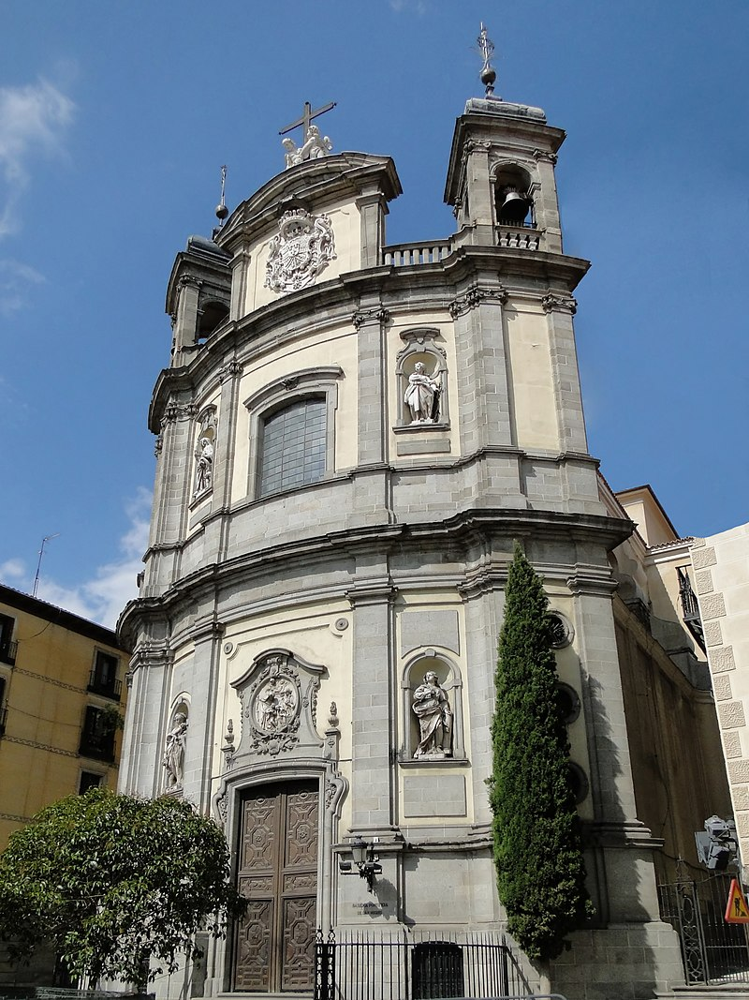
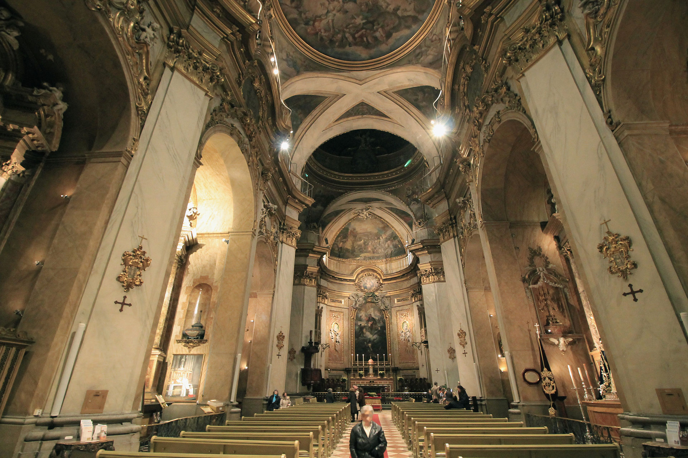
Basílica de San Miguel (1739-1754)
en un principio se llamó Iglesia de los Santos Justo y Pastor c/ San Justo 4
Arquitecto italiano Santiago Bonavía
transición artística entre el Barroco tardío italiano y el Neoclásico de reciente aparición
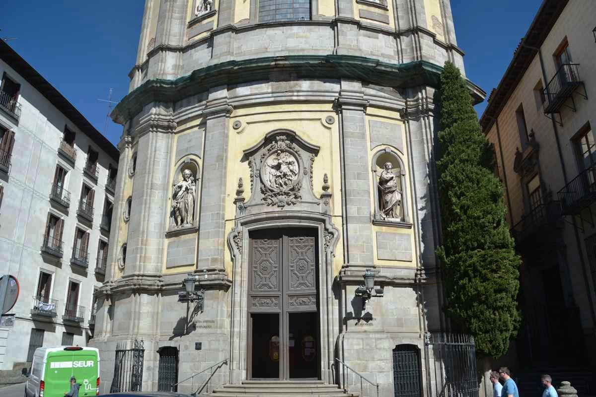
Basílica Pontificia de San Miguel (1739-1746) datos artísticos

Basílica Pontificia de San Miguel | Viendo Madrid
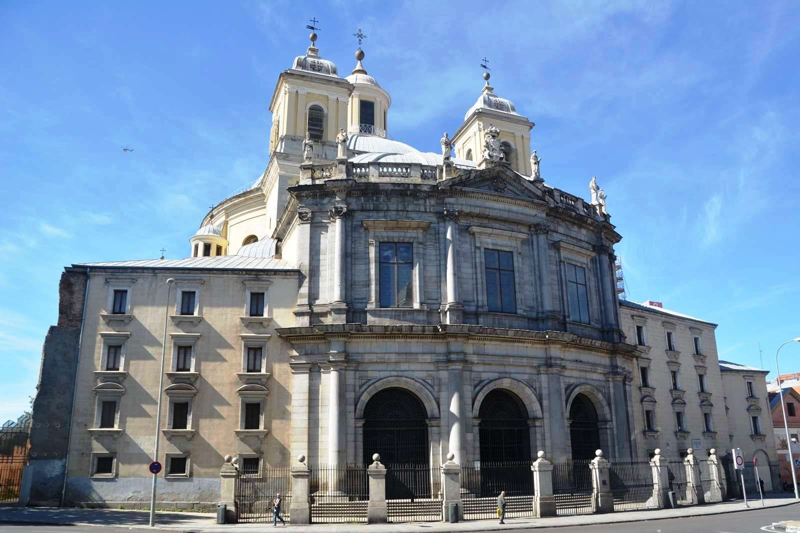
Basílica de San Francisco el Grande basílica y museo visita gratuita los jueves
La sillería del coro del templo se trajo del monasterio del Parral, y la de la Sacristía y Sala Capitular del Paular. (miradormadrid.com)
Basílica de San Francisco el Grande visita virtual madrida360.es
Basílica de San Francisco el Grande reportaje completo
siete maravillosas puertas de las cuales, la principal es excepcional, en madera de nogal con un bellisimo Crucificado rematándola, del s.XIX y obra todas ellas de Agustin Mustieles
Basílica Hispanoaméricana de Nuestra Señora de la Merced, de Oiza y Laorga
Una iglesia moderna que ha llegado inacabada a nuestros días
Catedral de Santa María Magdalena: Pascua ortodoxa en Hortaleza artículo nº 7
Palacio arzobispal de Madrid calles de San Justo 2 y la Pasa
Calle del Panecillo y de la Pasa
Calle de la Pasa y Pasadizo del Panecillo: secretos, robos y matrimonios
Monasterio de Santo Domingo el Real y la Madona de Madrid
Convento de Santo Domingo el Real
Real Monasterio de las Descalzas Reales
Real Monasterio de las Descalzas Reales Reabrimos Las Descalzas Reales -youtube
Real Monasterio de las Descalzas Reales La reapertura de Las Descalzas -youtube
Real Monasterio de las Descalzas Reales | pintura mural escalera investigart.com
Real Monasterio de las Descalzas Reales Entradas
Real Monasterio de las Descalzas Reales juancato.es
Iglesia del Convento Descalzas Reales -madrida360.es
Real Monasterio de la Encarnación juancato.es
Real Monasterio de la Encarnación
Real Monasterio de la Encarnación Pl. de la Encarnación, 1 (enfrente Plaza de Oriente)
Comendadoras de Santiago o Real Monasterio de Santiago el Mayor Pl. de las Comendadoras, 10
En el altar mayor llama la atención el gran lienzo retablo de Luca Giordano, el "fa presto" representando a Santiago en su caballo blanco, en el plano celestial de arriba, ayudando a las huestes cristianas en su lucha contra los musulmanes
Comendadoras de Santiago o Real Monasterio de Santiago el Mayor Apertura restauración
De la polémica Almudena a un ‘San Pedro’ futurista | Blog Sepa usted | EL PAÍS
Fotos: Las catedrales que pudo tener Madrid
Monasterio de Santa María de El Paular Retablo gótico en alabastro que preside la iglesia
Monasterio de Santa María de El Paular
Monasterio de Santa María la Real de Valdeiglesias Pelayos de la Presa
Se visita los fines de semana Por libre 3€ o guiada a las 13:00, 10€
https://monasteriopelayos.es
Camarín de la Virgen del Rosario de la iglesia de San Pedro Ad Víncula, Vallecas
Camarín de la Virgen del Rosario de la iglesia de San Pedro Ad Víncula, Vallecas
Huerto de las Monjas Sacramento 7
Iglesia de San Fermín de los Navarros neomudéjar | Eduardo Dato 10
Iglesia de San Fermín de los Navarros neomudéjar | Eduardo Dato 10 -es.wikipedia
Ermita de San Antonio de la Florida esmadrid.com
Fundación Carlos de Amberes c/ Claudio Coello
Catedral de la Almudena miradormadrid.com
Cripta de la Catedral de la Almudena miradormadrid.com
Iglesia del convento del Corpus Christi (Las Carboneras) del siglo XVII
(porque guarda una imagen de la Inmaculada que fue encontrada en una carbonería)
Plaza del Conde de Miranda | Calle del Codo Reportaje completo


Monasterio Jerónimo del Corpus Christi vulgo Carboneras
El retablo mayor del Convento de las Carboneras del Corpus Christi obra de Antón de Morales (1622) con el lienzo central de la Última Cena (1634) de Vicente Carducho
El Convento de las Carboneras, oficialmente conocido como Monasterio Jerónimo del Corpus Christi - Carboneras es el nombre por el que se conoce popularmente a esta comunidad.
En 1647, unos niños arrastraban por la callejuela de Puñoenrostro un cuadro de la Inmaculada Concepción que habían encontrado en la carbonería del padre de uno de ellos. El franciscano José Canalejas se dio cuenta y les convenció para que lo llevaran al cercano monasterio de monjas jerónimas, quienes lo aceptaron con agrado y extendieron su devoción por Madrid. Hoy se contempla enfrente del cancel de entrada a la iglesia.
Las Carboneras (Convento de Jerónimas del Corpus Christi) dulces
Convento de San Plácido "Anunciación" de Claudio Coello | esquina de las calles San Roque y Pez
Convento de San Plácido "Anunciación" de Claudio Coello | abierto 10:30 a 17:00 /5€
Convento de San Plácido Barroco madrileño
Los cuatro retablos, especialmente el del altar mayor, obra de los hermanos Pedro y José de la Torre. De nuestro gran escultor Manuel Pereira son los santos benedictinos y bernardos De Gregorio Fernández es el Cristo Yacente uno de los más contenidos y delicados que hizo el maestro de los imagineros. El rey Felipe IV consideraba a Fernández el mejor de los tallistas: “Es el escultor de mayor primor que hay en mis reinos”.
El retablo mayor enmarca un soberbio lienzo de El misterio de la Encarnación "Anunciación" de siete metros de altura, obra maestra de un Claudio Coello joven, en su mejor momento de inspiración.
De Coello son también los lienzos de los retablos laterales: San Benito y Santa Escolástica en el lado izquierdo, y la Visión de Santa Gertrudis, en el derecho.
Claudio Coello fue alumno del pintor madrileño Francisco Ricci quien tenía encargada la decoración del templo, pero fue capaz de reconocer la valía superior de su discípulo y le cedió los cuadros principales.
Ricci ayudado por Juan Cabezalero pintó al fresco la cúpula y las bóvedas. En las pechinas representó a las santas abadesas benedictinas.
Retablo benedictinas de San Plácido | Pedro y José de la Torre
Talla en Madera dorada y policromada

Claudio Coello | La Anunciación (1668) | Retablo mayor del Convento de San Plácido escenario de uno de los crímenes inquisitoriales más sonados de Madrid.
histórico Convento de San Plácido cerrado por falta de monjas tras 400 años en Malasaña Como curiosidad, cabe destacar que Diego de Velázquez pintó su Cristo crucificado -hoy en el Museo del Prado- para este convento, en cuya sacristía permaneció entre 1628 y 1808.
Hospital de la Venerable Orden Tercera de San Francisco de Asís (VOT) San Bernabé, 13
en funcionamiento de Madrid con más de tres siglos desde su fundación. Según subes por la escalera un Carreño y un Van Dick que son para caer rodando. Y en lo que era el Claustro, Antolínez, Mena... El hospital destaca por la gran cantidad de obras de arte que atesora en su interior, tanto esculturas, como la del busto de San Francisco de Agustín Querol, o el de Don Juan José de Austria, obra del flamenco Francisco Diesussart, como cuadros de artistas de la talla de Carreño de Miranda (“La Anunciación” y los “Desposorios Místicos de Santa Catalina de Alejandría con Cristo acompañada por San José y San Francisco”, ambos conocidos desde antiguo y muy brillantes de color. De lo mejor de la escuela madrileña del siglo XVII) gran retratista de la corte de Carlos II, o Van Dyck, cuyo cuadro "Cristo ante la mujer adúltera" preside uno de los tramos de la escalera del hospital.
Hospital de la VOT Gran reportaje
Hospital de la VOT Gran reportaje 2
Hospital de la VOT Gran reportaje 3
Hospital de la VOT Gran reportaje 4
Hospital de la Venerable Orden Tercera de San Francisco de Asís (VOT)
El hospital más antiguo de Madrid
Hospital de la VOT Cuadro Van Dyck "Cristo y la mujer adúltera"
Capilla del Cristo de los Dolores de la VOT (Venerable Orden Tercera de San Francisco de Asís)
Capilla del Cristo de los Dolores de la VOT
Capilla del Cristo de los Dolores de la VOT una de las cerraduras más antiguas de Madrid, Son de 1667 y 1668
Iglesias | Capillas .:
 Parroquia de Nuestra Señora de Guadalupe c/ Puerto Rico 1 Metro Concha Espina
Parroquia de Nuestra Señora de Guadalupe c/ Puerto Rico 1 Metro Concha Espina Parroquia de Nuestra Señora de Guadalupe Arquitectura mexicana
Parroquia de Nuestra Señora de Guadalupe Arquitectura mexicanaEnrique de la Mora Palomar, Félix Candela Outeriño, José Antonio Torroja Cavanillas, José Ramón Aspiazu Ordóñez (1962 - 1965)
Parroquia Hispanoamericana de la Merced C. Edgar Neville 23 -googlemaps
Parroquia de San Agustín c/ Joaquín Costa 10
Arquitecto.: Luis Moya (1946-50)
Es muy similar a la iglesia de la Universidad Laboral de Gijón, del mismo autor y mismas fechas.
Iglesia de Santa María La Antigua Descubierta una joya pintura medieval en medio de Carabanchel
Ermita de Santa María La Antigua | Carabanchel 360º
Ermita de Santa María La Antigua | Carabanchel En ellas se pueden distinguir escenas de la vida de San Isidro, de María Magdalena (posible advocación primigenia de la parroquia) así como del martirio de San Sebastián. También motivos heráldicos que han servido para datarlas, según expertos, a principios del siglo XVl
Ermita de la Virgen del Puerto miradormadrid.com
Iglesia y convento de las Trinitarias descalzas (Monasterio de San Ildefonso y San Juan de la Mata)
Iglesia de San Gines web.archive.org
Iglesia del Convento de Mercedarias Descalzas de don Juan de Alarcón
Iglesia del Convento de Mercedarias Descalzas de don Juan de Alarcón googlemaps


Iglesia de las Religiosas de María Inmaculada (Casa Madre) c/ Fuencarral 97
Capilla del Cristo de los Dolores de la VOT (Venerable Orden Tercera de San Francisco de Asís)
Capilla del Cristo de los Dolores de la VOT
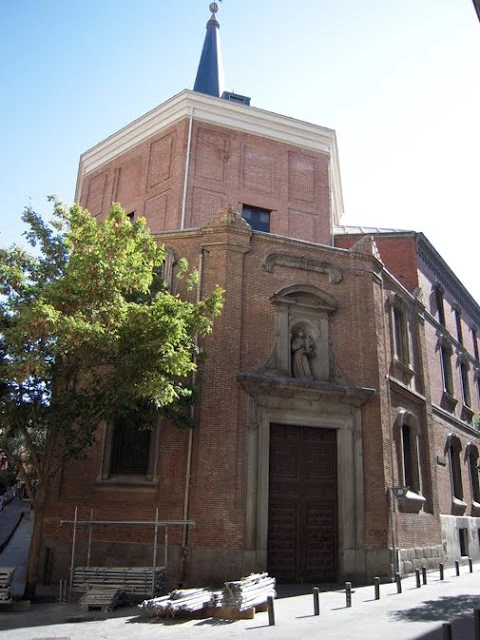
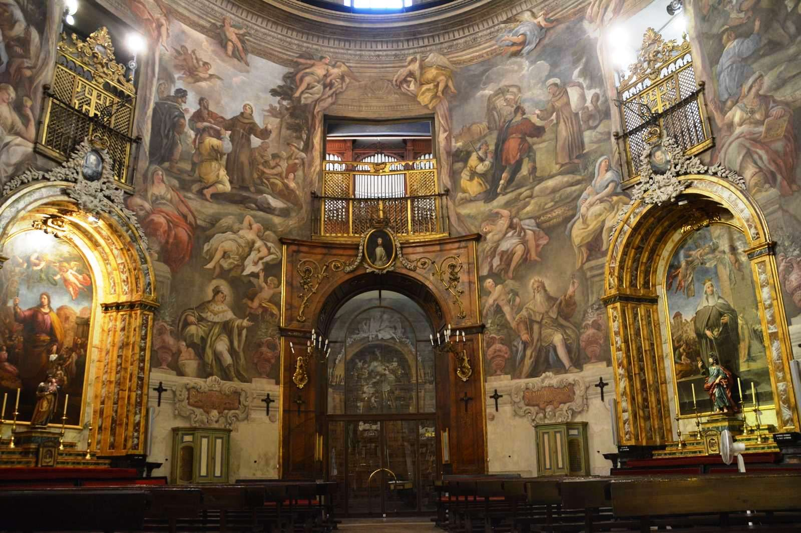
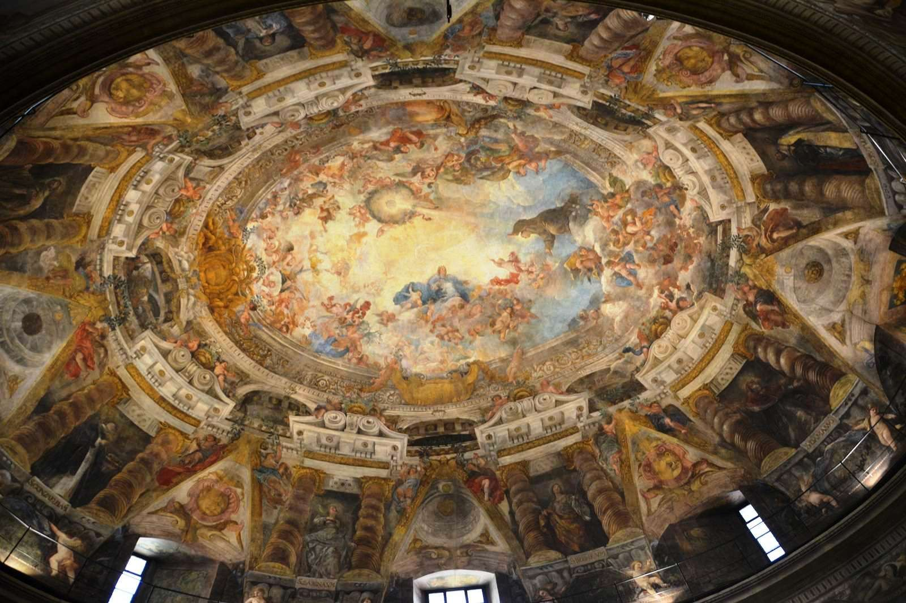
Iglesia de San Antonio de los Alemanes (1640) (San Antonio de los portugueses en 1624)
Pinturas y más en San Antonio de los Alemanes (inicios San Antonio de los Alemanes) En primer lugar está la cúpula de grandes dimensiones y forma elíptica. Fue pintada por Francisco Rizzi en 1662
con intervenciones de Francisco Carreño y Luca Giordano. Si te fijas un poco, en la parte central verás la Gloria de San Antonio una escena en la que el santo recibe al Niño Jesús de manos de la Virgen.
Iglesia de Santa Teresa y San José y Convento de los padres Carmelitas Descalzos, 1923-1928 - Plaza España, 13 - Arquitecto: Jesús Carrasco-Muñoz Encina
A destacar su cúpula neobizantina, recubierta de azulejos, obra del siempre genial Daniel Zuloaga.

Iglesia de Santa María del Monte Carmelo c/ de Ayala 37
Arquitecto: Luis Gutiérrez Soto (1960 y 1966)
Vidrieras.: Manuel Sánchez Molezún

Iglesia de Santa Cristina pasionpormadrid.com


Parroquia de San Clemente Romano C. de la Coalición 17 Villaverde
Arquitectos: (Luis José Mora) Mora Gutiérrez, Luis José (2003-2005)
Burón García, Alfonso (2002-2002)
Miguel Sánchez, Mercedes de (2002-2002)

Iglesia de Santa Cristina edificio neomudéjar -Puerta del Ángel en el Paseo de Extremadura
Fue una iniciativa de la Reina Regente María Cristina a finales del siglo XIX. En 1892 se inauguró un asilo para niños necesitados en el Paseo de Extremadura, y en 1904 se encargó la construcción de la iglesia anexa, terminada en 1906. Arquitecto: Enrique María Repullés y Vargas

Iglesia de Santa Cristina Baldaquino en el altar
Iglesia de Santa Cristina pasionpormadrid.com
Iglesia de Nuestra Señora de los Ángeles (1902) C/ Bravo Murillo 93
Arquitecto: Enrique María Repullés y Vargas
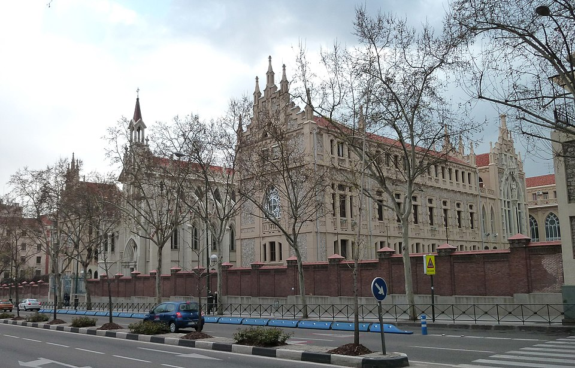
Iglesia Colegio Nuestra Señora del Pilar neogótico C/ del Príncipe de Vergara 41
Iglesia de las Religiosas de María Inmaculada (Casa Madre) c/ calle Fuencarral 97
Iglesia proyectada por el arquitecto Daniel Zavala Álvarez en el año 1921 y construida entre los años 1922 y 1925 en los jardines del Colegio María Inmaculada. En el año 1898 el arquitecto José Marañón Gómez-Acebo convirtió en Colegio lo que hasta entonces fue el Palacio del Conde de Vistahermosa.
Parroquia Santa María del Silencio Raimundo Fernández Villaverde 18 Las cerámicas son obra de Daniel Zuloaga que emplea dos técnicas, la del trencadiç (Antonio Gaudí) y la de paneles cerámicos, constituidos por azulejos denominados gotas de agua. Las vidrieras son de la casa francesa de Maumejean
Parroquia de Santa María del Silencio madrida360.es
 Iglesia de San Andrés Pl. de San Andrés, 1
Iglesia de San Andrés Pl. de San Andrés, 1 Iglesia de San Andrés Pl. de San Andrés, 1
Iglesia de San Andrés Pl. de San Andrés, 1 Iglesia de San Andrés El exalcalde Manzano pone cara a San Isidro en un cuadro
Iglesia de San Andrés El exalcalde Manzano pone cara a San Isidro en un cuadroIglesia de San Manuel y San Benito | calle de Alcalá, 83, en frente del Parque del Retiro
Iglesia de San Manuel y San Benito | Arquitecto:Fernando Arbós y Tremanti
 Iglesia del Buen Suceso 1º Puerta del Sol / 2ª Calle Princesa
Iglesia del Buen Suceso 1º Puerta del Sol / 2ª Calle PrincesaIglesia del Buen Suceso El derribo de la iglesia del Buen Suceso
Iglesia del Buen Suceso 2ª Iglesia del Buen Suceso de Madrid (1854-1975)
Iglesia del Buen Suceso Ruinas en el Monte de El Pardo en Google Maps
Iglesia-Hospital del Buen Suceso
Iglesia de Santa Bárbara (Convento de las Salesas Reales)
Iglesia de Santa Bárbara (Salesas Reales) web.archive.org
Iglesia de Santa Bárbara (Salesas Reales) Mausoleo del general Leopoldo O´Donnell obra de Jerónimo Suñol (1870)
Convento de las Salesas Reales Calle del General Castaños, 2

Parroquia Santa Bárbara (Convento de las Salesas Reales y Antiguo Real Monasterio de la Visitación)
La iglesia perteneció al magnifico Real Monasterio de la Visitación, construído durante el reinado de Fernando VI tercer rey Borbón en España y su esposa Bárbara de Braganza

Parroquia Santa Bárbara (Convento de las Salesas Reales) | Sepulcro Fernando VI Encargados por su medio hermano, el ya rey Carlos III se añadieron más tarde al templo, diseñados por Sabatini y esculpidos por Francisco Gutierrez El del Rey está situado en el crucero al lado de la Epístola con alegorías de la Justicia, la Abundancia y el Tiempo
Parroquia Santa Bárbara (Convento de las Salesas Reales) Cuadros y esculturas
Parroquia Santa Bárbara (Convento de las Salesas Reales)

Segundo Monasterio Salesas de la Visitación o Convento de las Salesas Nuevas C/ San Bernardo 72

Iglesia de Nuestra Señora de Montserrat estilo barroco C/ San Bernardo 79
Iglesia del Sacramento | Iglesia Catedral de las Fuerzas Armadas Calle Sacramento 11, próxima a la Calle Mayor
Iglesia de Santa Teresa y San José, la cúpula de colores Plaza España - Mirador Madrid
Iglesia de San Millán y San Cayetano c/ Embajadores 15 (Guerra civil)
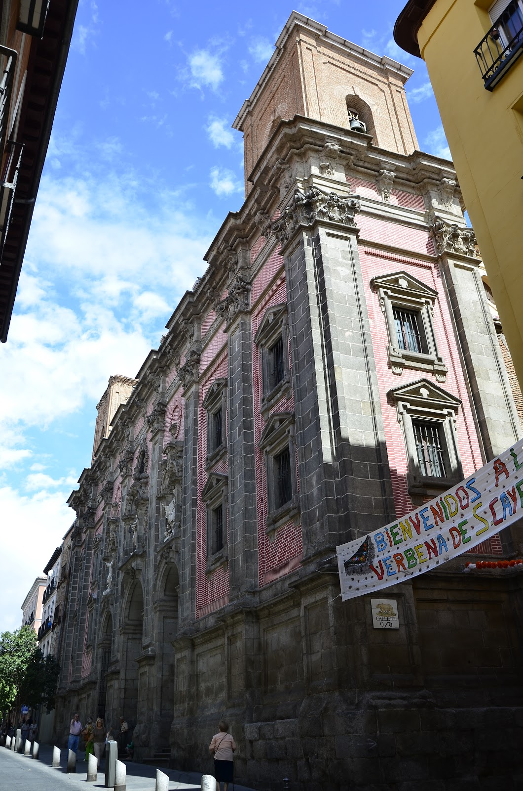
Iglesia de San Millán y San Cayetano Estilo Barroco c/ Embajadores 15 (Lavapiés)
Iglesia de San Millán y San Cayetano Presbiterio y Altar Mayor
presenta una reproducción de cuadros religiosos del Museo del Prado, National Gallery de Londres y Hermitage
Iglesia de San Millán y San Cayetano La Trinidad - El Greco (1577-1579) Museo del Prado
Iglesia de San Lorenzo c/ Doctor Piga, n.º 4 (Lavapiés) "Templo de las Pulgas" por su tamaño
En agosto se celebran las fiestas de San Lorenzo
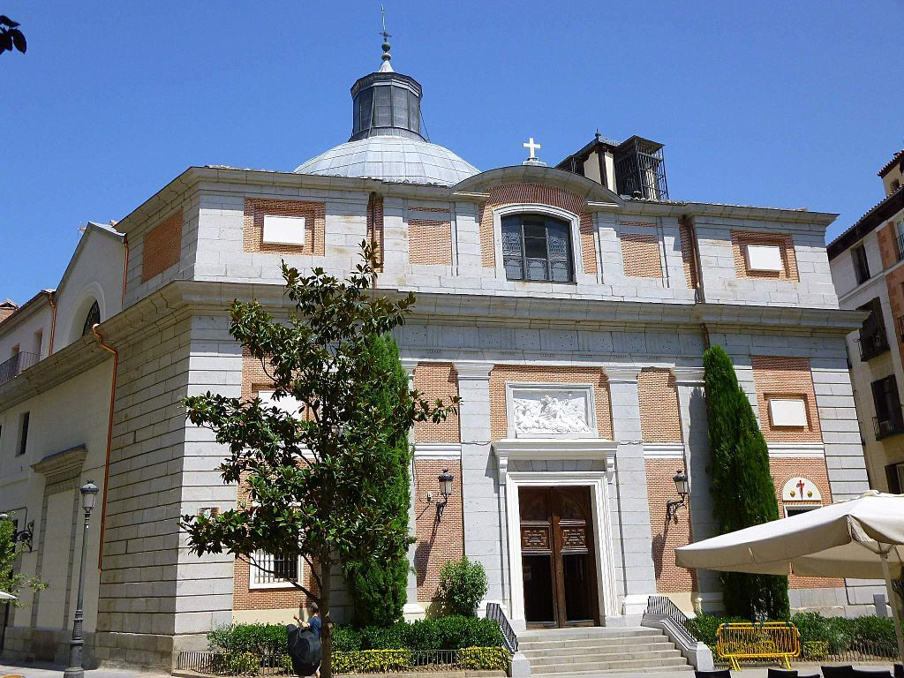
Iglesia de Santiago y San Juan Bautista plazuela de Santiago

Iglesia de Santiago y San Juan Bautista
Santiago Matamoros de Francisco Rizi (1657)
Seminario Conciliar de Madrid | Seminario San Damaso haztedelalatina.com
Seminario Conciliar de Madrid | Seminario San Damaso esmadrid.com
Iglesia de la Concepción Real de Calatrava conocida como iglesia de las Calatravas
Iglesia de la Concepción Real de Calatrava (Iglesia de las Calatravas) Alcalá 25
Iglesia de la Concepción Real de Calatrava (Iglesia de las Calatravas) facebook
Casa del cura de San José
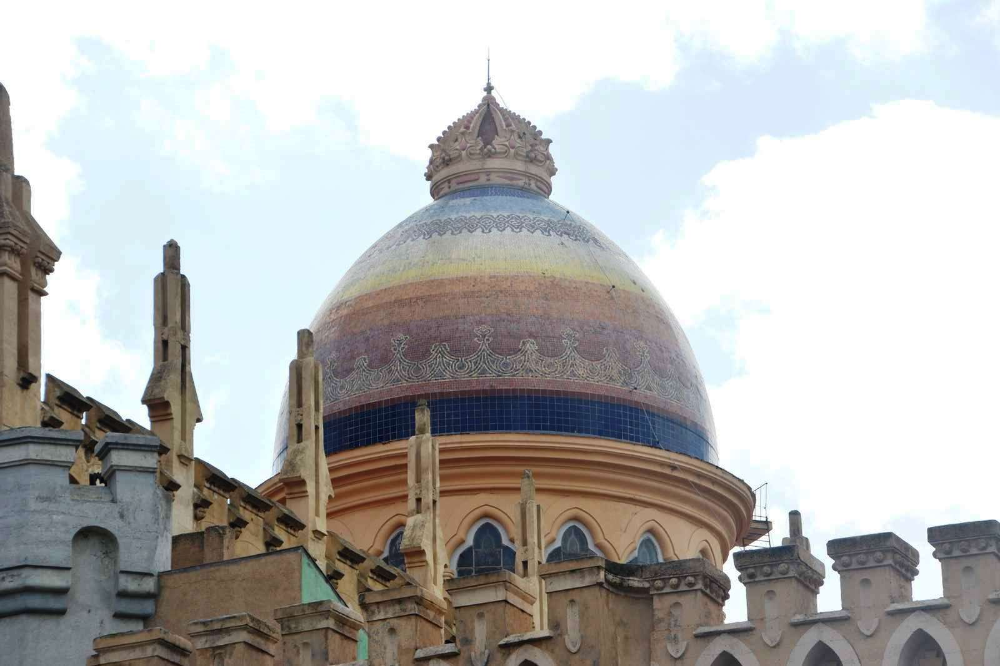
Iglesia de Santa Teresa y San José, la cúpula de colores Plaza España
Iglesia de Santa Teresa y San José y Convento de los padres Carmelitas Descalzos, 1923-1928 - Plaza España, 13 - Arquitecto: Jesús Carrasco-Muñoz Encina
A destacar su cúpula neobizantina, recubierta de azulejos, obra del siempre genial Daniel Zuloaga.
Iglesia de San Antón | Escuelas Pías de San Antón

Iglesia del Espíritu Santo c/ Serrano 125
Se construyó en 1942 por el arquitecto Miguel Fisac aprovechó para su proyecto parte del Auditorio de la Residencia de Estudiantes
La atención pastoral de la Iglesia del Espíritu Santo está confiada a sacerdotes del Opus Dei.


Iglesia del Espíritu Santo pinturas al fresco Ramón Stolz Viciano
relieves, de piedra blanca, obra del escultor Juan Adsuara
La cúpula más grande de España y la mini capilla Sixtina
La belleza discreta: Iglesia de la Buena Dicha
Capilla del Obispo rincón gótico en la plaza de la Paja 5
La capilla del Obispo de Plasencia Capilla de Nuestra Señora y san Juan de Letrán
Capilla del Obispo Dos retablos colaterales de la Capilla del Obispo, hoy desaparecidos
Capillas
Ermita de Nuestra Señora de la Antigua (Carabanchel) es la única ermita mudéjar
Ermitas madrileñas
Siete Iglesias de Madrid
Iglesia de San Jerónimo el Real
Iglesias de Conventos
Iglesias Neo Góticas
Iglesias Neo Mudéjar
Iglesias No Católicas
Iglesias en el Madrid de los Austrias
Iglesia de Santa Barbara (Salesas Reales)
Únicas Iglesias que se conservan del Madrid medieval.:
Iglesia de San Nicolás de Bari o de San Nicolás de los Servitas la iglesia más antigua de Madrid siglo XII
Iglesia de San Nicolás de Bari o de San Nicolás de los Servitas La misteriosa inscripción
Iglesia de San Nicolás de Bari también conocida como Parroquia de los Italianos
Desde 1825, la Iglesia está a cargo de la Orden Italiana de los Servitas, celebrando misas en dicho idioma cuando lo solicita un adecuado número de personas.
Iglesias siglos XII a XIV, Madrid Románico y Mudéjar
Iglesia de San Pedro el Viejo la iglesia más antigua de Madrid siglo XII
conservan los últimos escudos reales madrileños anteriores a los Reyes Católicos
Iglesia de San Nicolás de Bari o de San Nicolás de los Servitas | San Pedro el viejo
Iglesia de San Pedro ad Vincula (Villa de Vallecas) El Ministerio de Cultura concluye la restauración del retablo de la Iglesia de San Pedro ad Vincula (Villa de Vallecas)
.jpg)
 restauracion.jpg)
Iglesia de San Pedro ad Vincula (Villa de Vallecas) Cuadro restaurado Monumental obra de "La liberación de San Pedro" cuadro de seis metros de alto que Francisco Rizi realizó en 1669
Las cinco iglesias de Madrid con los diseños más insólitos
Las treinta y tres iglesias más espeluznantes de Madrid
Metro, Cercanias, Aeropuerto [+Planos y mapas Madrid] Historia
Metro Madrid - Planos metromadrid.es
Plano Metro Madrid esquematico PDF -Plano esquematico -metromadrid.es
Plano Metro Madrid con Base cartográfica PDF -metromadrid.es
Plano Metro Madrid Turístico PDF -metromadrid.es
Plano de MetroSur con base cartográfica -PDF -metromadrid.es
Plano de Cercanías Renfe Madrid 2024 (CON LÍNEAS DE METRO MADRID)
PLANO Metro+Cercanías Madrid
Plano Metro Ligero Oeste PDF -metromadrid.es
Plano Metro , Metro Sur y Metro Ligero Oeste PDF -miradormadrid.com
Plano Metro , Metro Sur y Metro Ligero Oeste inat mapping & wayfinding
Plano Metro , Metro Sur y Metro Ligero Oeste PDF -inat mapping & wayfinding
El ingeniero catalán que ha dibujado más de 280 mapas en 3D de estaciones de metro
Estaciones e intercambiadores en 3D - albertguillaumes.cat
Estaciones e intercambiadores en 3D | Sol -Gran Vía - albertguillaumes.cat
La L11 de Metro de Madrid hasta Conde de Casal cruzando el río
Metro de Madrid -twitter Museos de Metro
Estación Metro de Chamberí -museosmetromadrid.es -Lista última semana mes
Estación Metro de Chamberí
Estación Metro de Chamberí -youtube
Estación Metro de Chamberí -madrida360.es
Estación Metro de Chamberí -edificiosmadridblog
Estación Metro de Chamberí -reabre al público el antiguo vestíbulo
Estación Metro de Sevilla | Mural de cerámica
Estación Metro de Pacífico | Antiguo vestíbulo
Estación Metro de Pacífico | Antiguo vestíbulo notas mias

Estación Metro de Pacífico | Antiguo vestíbulo espacio original de 1923 que conserva todos los elementos del diseño de Antonio Palacios.
Está situado en el andén de L1 dirección Valdecarros.
Estación Metro de Pacífico | Antiguo vestíbulo ya es visitable
Estación de Tirso de Molina: Un antiguo convento y un cementerio de frailes: la historia del Metro de Tirso de Molina

Estación de Tirso de Molina: El escudo antiguo de la ciudad con frisos de cerámica de Toledo, con reflejos de cobre y oro. Originalmente se encontraba en la estación de Cuatro Caminos, cuando Alfonso XIII inauguró la línea en 1919
Estación de Tirso de Molina: El escudo es cerámico y de reflejos metálicos y forma parte de la decoración del vestíbulo de la estación de Tirso de Molina (anteriormente estación de Progreso) en la salida a la calle Conde de Romanones,. La estación de Progreso fue inaugurada en diciembre de 1921 dentro del tramo de ampliación de la Línea 1 que unió Sol con la estación de Mediodía, hoy llamada Atocha. En 1939, con el cambio de denominación de la plaza en la que se ubica, pasó a llamarse Tirso de Molina.
Estación de Tirso de Molina: El cementerio oculto de la estación
La estación de Tirso de Molina es una de las más bonitas de Madrid. Cuando abrió en diciembre de 1921, llevaba el nombre de Progreso, como la plaza que se encontraba en el exterior. En 1939 se cambió el nombre al de Tirso de Molina.
-web.archive
Museos del Metro de Madrid Los nuevos pases se habilitarán la última semana de mes

Nave de Motores de Pacífico artedemadrid
Nave de Motores de Pacífico unaventanadesdemadrid
Calle de Valderribas, 49 (esquina c/Sánchez Barcaiztegui)

Subestaciones eléctricas para el Metro en los barrios de Salamanca y Chamberí. Dos edificios fabriles que se conservan en pleno centro de Madrid, el primero en la calle de Castelló nº 21 y el segundo en Calle de Olid 7 (9)
Metro cede a la Fundación Hispano Judía antigua Subestacion eléctrica
Así será el Museo Hispano Judío de Madrid: en un edificio histórico de Metro y listo en 2025
Metro de Madrid | Historia
Estación de Cuatro Caminos ya luce su antiguo tótem
Metro de Madrid | Chamartin | Un viaje al pasado de Metro Madrid
Metro de Madrid | Chamartin | Museos del Metro de Madrid
Metro de Madrid | Chamartin | Joyas históricas en Chamartín
Metro de Madrid | Ópera | Los Caños del Peral
Metro de Madrid | Recorremos los túneles fantasma de Goya Bis | Goya y Diego de León
Metro de Madrid | Sol | geometría de su techo
El arquitecto no es otro que Felix Candela
Nacido en Madrid, se titula en 1935. La guerra empieza en 1936.
Tras luchar en el bando republicano se exilia a México donde desarrola casi toda su carrera profesional.
Metro de Madrid | Metro sin conductor
F.C. Suburbano de Carabanchel a Chamartín de la Rosa
Ferrocarril suburbano de Carabanchel es la antigua denominación de parte de las actuales líneas 5 y 10 del Metro de Madrid. El «Suburbano», como se conocía popularmente, era una concesión independiente del Metro puesta en servicio en el año 1961 y en origen estaba explotado por el Estado español, a diferencia del Metro, que era privado desde su origen en 1919 hasta la unificación de ambas redes, ya en manos públicas, en la década de 1980. El Suburbano original disponía de las siguientes estaciones: Plaza de España, Lago, Batán, Campamento, Empalme, Aluche y Carabanchel La línea disponía de cocheras y talleres propios ubicados en Aluche
suburbano desde 1961 Explotación de Ferrocarriles por el Estado (EFE) organismo público español, dependiente del Ministerio de Obras Públicas, que estaba encargado de asumir la gestión de líneas de ferrocarril que habían pasado a control del Estado. En 1965 fue renombrada como Ferrocarriles de Vía Estrecha (FEVE), dedicándose exclusivamente a los ferrocarriles de vía estrecha.
Fraude Patrimonial en las Cocheras de Metro
Metro de Madrid | Pasaporte de los Museos de Metro
Centenario del Metro de Madrid: BBVA fue el único banco que apostó por el proyecto
De Madrid al subsuelo: 15 tesoros escondidos en el metro de la capital
Explosión Polvorín Estación Lista causó más de 100 muertos (10 enero 1938)
Explosión Polvorín Estación Lista causó más de 100 muertos (10 enero 1938)
Primera explosión en la estación de Goya el 15 de noviembre de 1937
Estación en Curva @estacionEC
Asociación de amigos del metro de Madrid Andén 1 @anden_1
Vía Libre. La revista del ferrocarril @RevistaViaLibre
Vía Libre. La revista del ferrocarril @RevistaViaLibre
Andén Goya Bis Salida actual de la estación de Goya hacía Manuel Becerra en línea 2 Se puede observar a la izquierda en túnel de enlace con la línea 4 antiguamente utilizado por el ramal a Diego de León
los túneles fantasma de Goya Bis
Las estaciones de tren más bonitas de España
Azulejos en Madrid | Estaciones de Metro
Plano de RENFE Cercanías Madrid diciembre 2024 PDF
Plano de RENFE Cercanías Madrid enero 2024 GIF
PLANO geográfico Cercanías Madrid
PLANO Metro+Cercanías Madrid
Plano de Cercanías Renfe Madrid 2024 (CON LÍNEAS DE METRO MADRID)
Cercanías Atocha-Aeropuerto T4 | C1 y C10
RENFE Cercanías
InfoRENFE
InfoAdif
RENFE Avisos
CercaniasMadrid @CercaniasMadrid
Plano Zonas Turisticas PDF -miradormadrid.com
Plano de entradas y salidas de la M30 y M40
Aeropuerto de Madrid Barajas Llegadas y Salidas
Aeropuerto de Madrid Barajas -Informacion util Barajas y T4
Aeropuerto de Madrid Barajas Terminal 4 Satélite T4S
Aeropuerto de Madrid Barajas Terminal 4 Satélite T4S -como llegar
Aeropuerto de Madrid Barajas Terminal -EMT instala tótems de venta de billetes en Atocha y Barajas en la línea Exprés Aeropuerto
Las nuevas localizaciones de los puntos de venta están situadas en la salida de las terminales aeroportuarias: T1 (parada 3540), T2 (parada 3542) y T4 (parada 5726) y en el exterior del intercambiador de Atocha (parada 5709)
Flightradar24.com -mapa tiempo real aviones volando Madrid
Flightradar24.com -mapa tiempo real aviones volando Madrid
Radarbox24.com -mapa tiempo real aviones volando Madrid
ADS-B Exchange - tracking 5490 aircraft -mapa tiempo real aviones volando
Consorcio Transportes madrid -itinerarios
Consorcio Transportes madrid
Tu transporte Madrid - Consulta el tiempo de espera de todo el transporte de Madrid
Tu transporte Madrid | EMT Paradas
Tu transporte Madrid | App Google Play
Tu transporte Madrid | Planos y Mapas
EMT Madrid. Empresa Municipal de Transportes de Madrid, S. A.
EMT linea 23
EMT lineas a San Fermin | 23 | 123 | 85 | 86 | 59
EMT navegapormadrid.emtmadrid.es app web mapa interactivo
EMT navegapormadrid.emtmadrid.es web inicio
Líneas cero de autobús gratuitas - Ayuntamiento de Madrid
Línea 001 tiene 32 paradas intermedias en total más las cuatro cabeceras. Desde el intercambiador de Atocha (parada número 5710) para en 17 ubicaciones y discurre por el Paseo de Infanta Isabel, Paseo del Prado, Plaza de Cánovas del Castillo, Plaza de Cibeles, calle Alcalá, Gran Vía, calle Princesa y Plaza de Moncloa, hasta su cabecera en Moncloa, en la calle Arcipreste de Hita
Línea 002 atraviesa parte del distrito de Centro desde Argüelles hasta Puerta de Toledo
Historia EMT
Remolques en los tranvías eléctricos de Madrid historia
Los remolques pesados de la SMT historia
Coche RM-959 en el triángulo de la Glorieta Elíptica (Atocha-Usera) fabricado por CAF por encargo de SMT (Sociedad Madrileña de Tranvías) en 1941
Remolques motorizados. Serie 951 – 965 muy pesados
La línea era la 47 que iba de Atocha a Usera y posteriormente se alargó hasta la Plaza Elíptica.
Historias del tren: 150 AÑOS DE TRANVÍAS DE MADRID (y V) historia
Remodelación de la zona Norte de Puerta de Atocha PDF
Consorcio Regional de Transportes de Madrid Abonos Transportes
Gestión de la Tarjeta Transporte Público Abonos Transportes
Movilidad y transporte público en la provincia de Madrid
Google Maps -Madrid
Plano Metro Madrid -segun Anden1
Mapas de Madrid, Metro y Autobuses turisticos Descargar
Un recorrido por Madrid a través de sus mapas larazon.es
Mapas y guías imprescindibles para conocer Madrid | Turismo Madrid
‘Madrid City Card’ abono de transporte con ventajas en una treintena de planes de ocio
Bestcitymaps.com
Ayto-Mostoles.es -callejero
Madrid Capital | Curiosidades.:
Secretos de Madrid
Secretos de Madrid -wordpress.com
Madrid Secreto | Los mejores planes de Madrid
Madrid Información | Las ZANCADAS de Santi Navas
Arte en Madrid | @ArteEnMadrid
Pasión por Madrid
Antiguos Cafés de Madrid olvido a los cafés y personajes de Madrid que ya no existen
Álvaro Llorente madridenlapalmadetumano.com (su web)
Sara, profe-guia de Conocer Madrid Grupos viernes 10 h | Tlfn. 697 320 691
Ricardo Blanco "Días de paseos cortos y (re)descubrir nuestros barrios
campaña de turismo de los 21 distritos
Guía turística del Madrid periférico: cien lugares (casi) secretos
Ricardo Blanco< recorre en su nuevo libro un centenar de localizaciones del inmenso patrimonio histórico, cultural y natural de la capital
‘Madrid entre épocas’, de Valentín Andrés Pérez Serén
El proyecto 'refotográfico' que busca rescatar la historia de Madrid e inmortalizarla en un libro
APIT | Asociación de guías oficiales de turismo Comunidad de Madrid
Cámara web Puerta del Sol y el Tío Pepe
El 23 de julio de 1816 nacía en Garchizy (Francia) el fotógrafo Jean Laurent
Fue en Madrid, ciudad en la que se estableció en 1844 donde desarrolló su carrera convirtiéndose en el fotógrafo más importante de la centuria.
Pasea Madrid Apertura de inscripciones a 2022 en marzo
evacuatorio de la Puerta del Sol
Callejón del Infierno | Plaza Mayor – Gato por Madrid
Calle del Codo | Plaza de la Villa
Tropas imperiales inspiradas en Star Wars desfilarán el 3 de abril por las calles de Aluche
El grafitero antisistema que ha rescatado la rotulación comercial en España
Diego Apesteguía ha revitalizado un oficio casi perdido. Sus rótulos de vidrio, oro y plata son parte ya del paisaje urbano tanto como lo fueron hace 20 años los grafitis que realizaba bajo el enigmático eslogan ‘Vota Dier’
Quina Santa Catalina: el vino con alcohol que los niños españoles tomaban como golosina
«Casas a la malicia» Felipe II decide entonces rescatar la ley de Regalía de Aposento, de origen medieval. Consistía en la obligación por parte de los propietarios de viviendas de dos plantas de ceder la segunda para alojamiento de los funcionarios sin que estos tuvieran que abonar ninguna cantidad.
Las denominadas “de incómoda partición” estaban exentas.
Disfrutando de Madrid:
Disfrutando de Madrid: CURIOSIDADES
Teatros de Madrid: el más antiguo del mundo y otras curiosidades que no sabías
Alfredo Ruiz de Luna: Cerámica, tradición y arte por las calles de Madrid
Madrid index reddit.com Muy completo
Plaza del Guá -guerra civil
Los secretos mejor guardados de Madrid
¿Crees que conoces Madrid?
Espacio Madrid - Tu espacio sobre Madrid en la red
Espacio Ibercaja Delicias | Espectáculos y ocio Paseo de las Delicias 61
(acceso por el museo del Ferrocarril de Madrid)
Pasión por Madrid
Arte en Madrid
Miradas de Madrid -facebook Josema Bustos
Miradas de Madrid -miradasdemadrid.blogspot.com -Josema Bustos
La Janucá judía en Madrid -1 diciembre candelabro de nueve brazos denominado januquiá
Los restos arqueológicos del Cuartel de San Gil conformarán una nueva ruta cultural
Cuartel de San Gil ya asoma en plaza de España, descuartelado y desangilado.
Ayto halla restos del camino de ronda del Cuartel de San Gil serán integrados nueva plza España
Sublevación del Cuartel de San Gil
Madrid Antiguo
El barrio de Madrid que declaró la independencia | barrio de Belmonte, del distrito de Moncloa-Aravaca declaró su independencia en el año 1990 y que llegó a pedir asilo en Cuba.
Trampantojos Calle de Almaden cruce calle de Fúcar
Trampantojo arquitectónico Calle de Almaden cruce calle de Fúcar
 Monumento a Agustín Lara c/Sombrerete 26
Monumento a Agustín Lara c/Sombrerete 26compositor e intérprete mexicano de canciones y boleros. Lara fue el compositor del famoso chotis Madrid, Madrid, Madrid
La estatua data de 1975 y su instalación fue impulsada por varias personas tanto de México como de España y en su inauguración estuvieron presentes los alcaldes de Madrid y Barcelona.
Estación de Atocha o del Mediodía memoriademadrid.es
Atocha, la Estación del Mediodía gatopormadrid.com
Estación de Atocha reforma
¿Por qué decimos «más chulo que un ocho»?
Eres mas chulo que un 8, el tranvía de la Bombilla
Un burdel madrileño siglo XVII dio origen a este famoso refrán sobre el clima
"Hasta el cuarenta de mayo no te quites el sayo" n la calle Montera de Madrid habría existido un prostíbulo conocido como "Cuarenta de Mayo". Se dice que los clientes, tras cruzar otros establecimientos, llegaban al lugar y, una vez dentro, podían quitarse sus prendas de abrigo. Con el tiempo, el dicho habría evolucionado hasta su uso actual, vinculado a la climatología.
La primera referencia escrita de esta frase se encuentra en un poema de Rodríguez Marón en 1896, que ampliaba el refrán con una rima adicional:
"Hasta el cuarenta de mayo no te quites el sayo;
y si vuelve a llover, vuélvetelo a poner."
10 murallas desconocidas de Madrid
Túnel de Bonaparte El túnel secreto por el que “Pepe Botella” escapaba del Palacio Real
Túnel de Bonaparte arquitecto Juan de Villanueva
Túnel de Bonaparte entre el Palacio Real y Madrid Río - Mirador Madrid
Túnel de Bonaparte entre el Palacio Real y Madrid Río -Historia de Madrid
Túnel de Bonaparte Nueva vida al túnel 'secreto' que José Bonaparte proyectó para escaparse a jugar al billar a la Casa de Campo (y nunca usó) y sirvió a Alfonso XIII en su huida de la capital
Edificio Críspulo Moro edificio diseñado en 1922 por Críspulo Moro
modernista y que incorpora elementos neoárabes
Avenida de Alfonso XII con la calle Doctor Velasco
Colapsa la cúpula Edificio Críspulo Moro en Alfonso XII nº 58 con la calle Doctor Velasco que fue obra del arquitecto del Cine Doré
Museo de los Caños del Peral Metro Opera -miradormadrid.com
Museo de los Caños del Peral Metro Opera -esmadrid.com
Museo de los Caños del Peral Metro Opera -museosmetromadrid.es
Acueducto de Amaniel
Acueducto de Sabatini | de la Partida | Casa de Campo
MCyP | Asociación defensa patrimonio histórico, artístico, cultural Comunidad de Madrid
Casas de Benito Pérez Galdós, en Madrid (I) - Zenda
La Biblioteca del Senado
Miradores de Madrid
Teatro de Autómatas
Teatro de Autómatas | Mar PSOE Ayto. Madrid
Teatro de Autómatas abre sus puertas esta Navidad en Matadero
Aparcamiento mecánico de la calle Maestro Guerrero. 1969
Cuesta de los Ciegos se llama así - Mirador Madrid
Un Pasadizo bajo la Cuesta de los Ciegos artedemadrid
Cuesta de los Ciegos Fuente con un escudo de la ciudad de la Segunda República (1932), con la corona mural y el antiguo escudo madrileño.
Calle del Panecillo y de la Pasa
Calle de la Pasa y Pasadizo del Panecillo: secretos, robos y matrimonios
Comercios Históricos de Madrid | Catálogo Fotográfico
"Comercios históricos de Madrid", guía fotográfica
Comercios Históricos de Madrid | Comercial Amparo
Las preciosas lunas pintadas de la antigua mercería Amparo
en la calle Marqués de Pontejos fueron obra de la Fábrica de Lunas Sucesor de G. Pereantón S.A.
Comercios Históricos de Madrid | Comercial Amparo
C. del Marqués Viudo de Pontejos -googlemaps
Las farmacias más antiguas de Madrid

Farmacia de la Reina Madre Creada en 1578 por un alquimista veneciano | Calle Mayor 59
Farmacia de la Reina Madre rehabilitada 1913 por arquitecto modernista Carrasco-Muñoz Encina
Farmacia Cervantes León botica data de fines del siglo XVII, Siglo de Oro | Calle León, 13
Plaza de la Paja | Madrid de los Austrias
La Posada del Peine el hotel más antiguo de Madrid - Un Gato por Madrid
La Posada del Peine miradormadrid.com
Casa de Cisneros en la Plaza de la Villa
Casa de Cisneros en la Plaza de la Villa 2
Torre de los Lujanes | La puerta más antigua de Madrid
Pasillo de cristal a 28 pisos de altura en el Hotel Riu
Madrid en Pinterest
Parking Núñez de Balboa 52 Privado
Pasillo de cristal a 28 pisos de altura en el Hotel Riu
Torre de 27 plantas para Madrid Río
El primer 'gato' de Madrid tiene 15 millones de años
Paleontólogos del Museo Nacional de Ciencias Naturales descubren un nuevo género y especie de felino bautizado como Magerifelis peignei, encontrado en unas excavaciones en el intercambiador de Príncipe Pío
Azulejos y Cerámicas.:
Rótulos de Calles
Las diez calles de Madrid con las leyendas más sorprendentes
Placas cerámicas de calles | Alfredo Ruiz de Luna
Los azulejos de Visita G en Madrid | Visita General de Regalía de Aposento | Fernando VI
Azulejos en Madrid (1)
Azulejos en Madrid (2)
Azulejos en Madrid (3)
Ruta en Madrid por las Cerámicas Monumentales de Daniel Zuloaga
Azulejos en Madrid | Estaciones de Metro
Juan Ruiz de Luna, ceramista
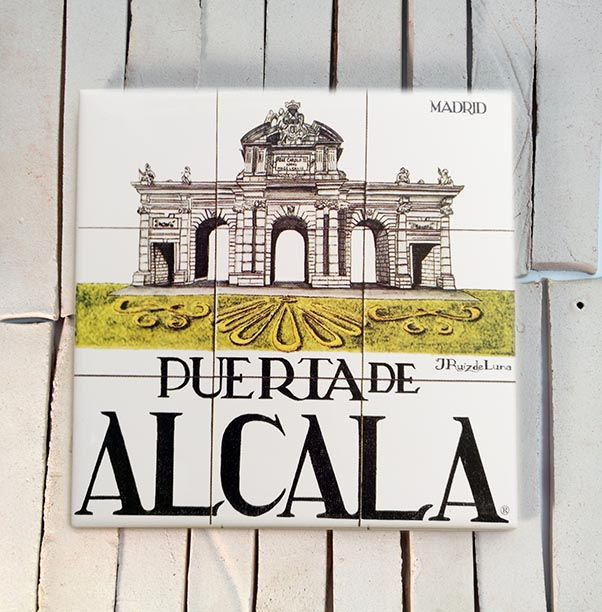 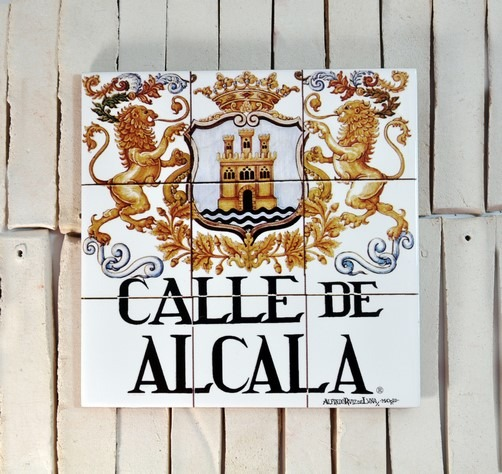 Alfredo Ruiz de Luna nieto del fundador de la saga de ceramistas comienza su trayectoria artística en la década de los 80
Entre los años 1992 y 2012 , diseñó y pintó 385 de las placas cerámicas de las calles del casco histórico de Madrid.
Desde el año 1993, Juan Ruiz de Luna, biznieto del fundador de la saga y sobrino de Alfredo Ruiz de Luna continúa con la tradición familiar ceramista. En 2011 funda en colaboración con Alfredo Ruiz de Luna la empresa Las Calles del Viejo Madrid
Alfredo Ruiz de Luna tercera generación de una de las más importantes sagas familiares de ceramistas españoles.
Su abuelo, Juan Ruiz de Luna se dedicó a recuperar, junto a Enrique Guijo la tradición artística de la cerámica talaverana, una de las más populares y valoradas internacionalmente desde el siglo XVII.
 Alfredo Ruiz de Luna | Taberna de Los Gabrieles número de 17 de la calle Echegaray
Alfredo Ruiz de Luna | Taberna de Los Gabrieles número de 17 de la calle EchegarayLos murales son obra de los artistas Alfonso Romero, Enrique Guijo, Juan Ruiz de Luna y Rajel, quienes, proviniendo de Andalucía, decoraron diversos comercios madrileños en el primer tercio del siglo XX. Los artistas Guijo y Romero tenían un taller en la calle Mayor y un horno de cerámica en Carabanchel.
web.archive ->>https://caminandopormadrid.com/la-taberna-de-los-gabrieles
Alfredo Ruiz de Luna | Taberna de Los Gabrieles Los murales son obra de los artistas Alfonso Romero, Enrique Guijo, Juan Ruiz de Luna y Rajel, que se granjearon un nombre entre los ceramistas más reputados del primer tercio del siglo XX decorando diversos comercios del Madrid más auténtico y cañí.
Alfonso Romero, pintor ceramista
Enrique Guijo, ceramista inquieto de todo arte… | Arte en Madrid
Enrique Guijo, ceramista La fachada de la Antigua Farmacia Juanse adornada con azulejos de cerámica diseñados por Enrique Guijo
confluencia de las calles San Andrés con San Vicente Ferrer 32 una auténtica joya del barrio de Malasaña
Enrique Guijo | Histórica Farmacia Juanse de Malasaña
Escuela de Cerámica de La Moncloa y Escuela de Arte Francisco Alcántara
Manuel Ramos Rejano azulejos sevillanos
La escalera circular interior del edificio en Cibeles que construyeron Antonio Palacios y Joaquín Otamendi para ser sede de la Sociedad de Correos y Telégrafos de España. La escalera era de uso interno y está revestida de azulejos sevillanos de Manuel Ramos Rejano
Iglesia de Santa Teresa y San José y Convento de los padres Carmelitas Descalzos, 1923-1928 - Plaza España, 13 - Arquitecto: Jesús Carrasco-Muñoz Encina
A destacar su cúpula neobizantina, recubierta de azulejos, obra del siempre genial Daniel Zuloaga.
Esta es la casa del 'Ratoncito Pérez' c/ Arenal 8
Aparece en Madrid una nueva casita del Ratón Pérez calle Velázquez 13


Mural cerámico. Metro República Argentina
Ceramista: Miguel Durán- Lóriga prestigioso ceramista especializado en murales en arquitectura, fundador en 1952 de la fábrica cerámica Alfaraz cuya firma aparece en este mural.
.jpg)
Eladio García de Santibáñez creó en el plazo de una década, entre los 70 y los 80, obras de arte para 15 estaciones de Metro
Mural cerámico de Eladio García de Santibáñez en uno de los distribuidores de la estación de Avenida de América de Madrid, inaugurada en 1973

Eladio García de Santibáñez Mural Cerámica estación Laguna

Eladio García de Santibáñez Mural estacion Pueblo Nuevo

Eladio García de Santibáñez Mural estacion Conde de Casal

Eladio García de Santibáñez Mural estacion Sainz de Baranda

Eladio García de Santibáñez Mural estacion Ibiza
Forjados | cerrajería | Fundido en Bronce.:


Puertas de entrada a los edificios de Sagasta 16, 20 y 22. Interesantes decoraciones en fachada y en las propias puertas de hierro en estilos neobarroco, neorrenacentista y modernista, repect. de los arq. Gambra (16) e Iradier(20), desconozco el del n° 22.

Edificio de viviendas proyectado en 1900 por el arquitecto Luis Bellido para su hermano Manuel Almagro 2 esq plza de Alonso Martínez (Chamberi)
Es una de las casas de alquiler artísticas, como dijo Luis S. de los Terreros, que se construyeron en Madrid en los primeros años del siglo XX
Destaca la cerrajería realizada en los talleres de Casa Asins de la que se conserva la exquisita puerta de entrada.
Casa Asins (Bernardo, hijo Gabriel y nieto Gabriel) | Arte en Madrid
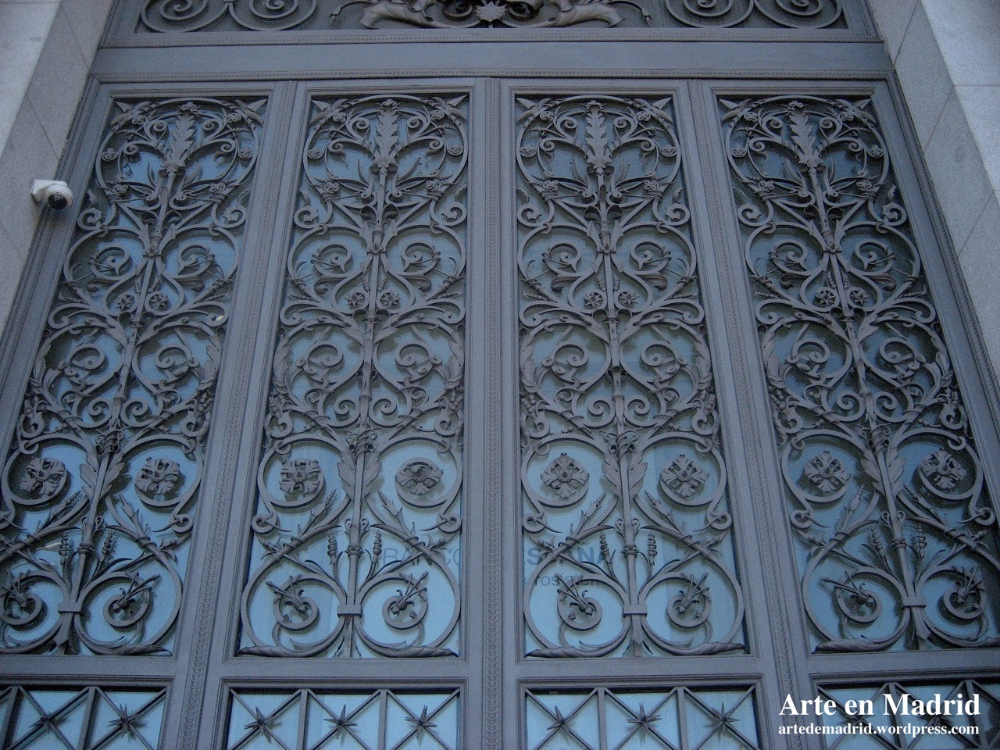
Fabricó las puertas de las cuatro fachadas del Banco de España y demás elementos de hierro, modelo del arquitecto Eduardo de Adaro.
Biblioteca del Casino de Madrid, Alcalá 15 con José López Sallaberry Asins construyó la Biblioteca en estilo gótico.
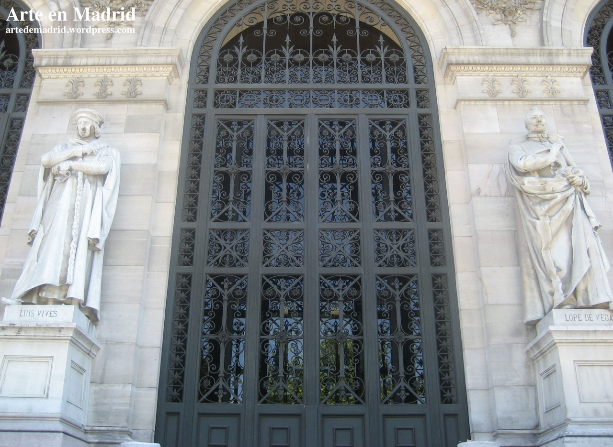
Biblioteca Nacional en el Paseo de Recoletos
Biblioteca del Senado, construida en 1882 en estilo neogótico obra de Bernardo Asins, bajo la dirección del arquitecto Emilio Rodríguez Ayuso.
Biblioteca y el Museo Arqueológico Nacional, consistentes en puertas, verjas, cubiertas de patios, y el gran depósito de libros de la biblioteca.
Iglesia de San Vicente de Paul conserva la verja de estilo gótico allí forjada, según diseño de Juan Bautista Lázaro.
Antiguo MInisterio de Fomento, en Atocha.
San Francisco el Grande
Otras obras fueron la fachada del Banco de Bilbao en la calle de Sevilla con Ricardo de Bastida Bilbao en los primeros años 20, las puertas y rejas del Círculo de la Unión Mercantil en la Gran Vía 24. Escaleras, ventanas, persianas, etc. para el Banco Hispano Americano y para el Crédit Lyonnais. La verja de la Catedral de la Almudena
la puerta monumental del Palacio de Justicia.
Encargado de la construcción del Palacio de Velázquez En 1887 se adjudicaron a la Casa Asins las obras para la realización del Pabellon de hierro y cristal que habría de albergar la Exposición de Filipinas en el Parque del Retiro, el Palacio de Cristal quizá su obra más grandiosa. Ambos edificios, obra de Ricardo Velázquez Bosco.
Con Antonio Palacios trabajó en la construcción del Banco del Río de la Plata hoy sede del Instituto Cervantes la cual comenzó en 1910, y probablemente en los demás edificios que este arquitecto construyó, como el cercano Palacio de Comunicaciones
Palacios como anteriormente Velázquez Bosco arquitecto que ejerció una gran influencia sobre él, supo unir a la perfección las artes decorativas y la arquitectura: la cerámica de Daniel Zuloaga la escultura de Ángel García Díaz y la cerrajería de Gabriel Asins antes de Bernardo
obra de su bisnieta Elena Asins (1940-2015)
Elena Asins (1940-2015). Pionera del arte conceptual en España
El Arte del Fundido en Bronce
Entre los procedimientos empleados desde los tiempos más remotos se encuentra la fundición a la cera perdida
Son varias las empresas que se dedican a esta tarea en Madrid. Arte 6 nacida en 1994, creadora de obras emblemáticas como El Abrazo de Juan Genovés ubicada en la plaza de Antón Martín
Capa Escultura empresa familiar, fundada en 1958 por Eduardo Capa
Por citar una de sus obras recientes, de sus hornos salió la espectacular Puerta de la Ampliación del Prado, de Cristina Iglesias Ambas fundiciones se encuentran en Arganda del Rey La más antigua es la Fundición Codina Ha cumplido 120 años.
 La pamela, La mariposa, Los aretes, La diadema, La doble imagen y Mariposas | Fundición Capa esculturas | Manolo Valdés
La pamela, La mariposa, Los aretes, La diadema, La doble imagen y Mariposas | Fundición Capa esculturas | Manolo ValdésCiudad de las Artes y las Ciencias, Valencia
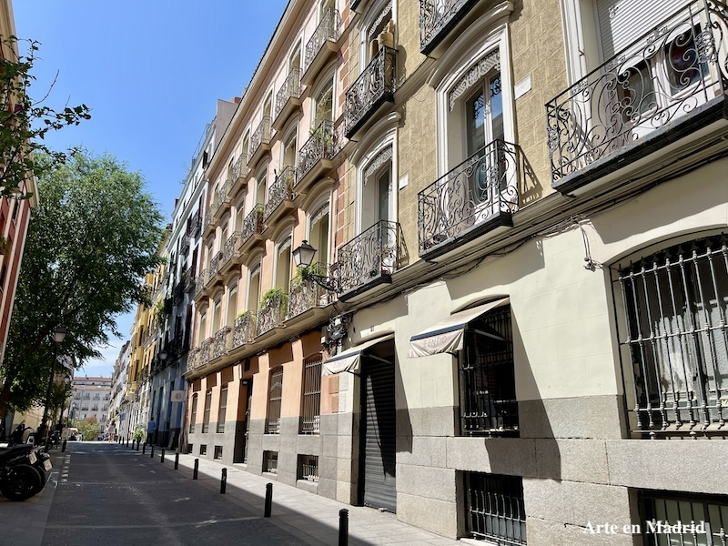 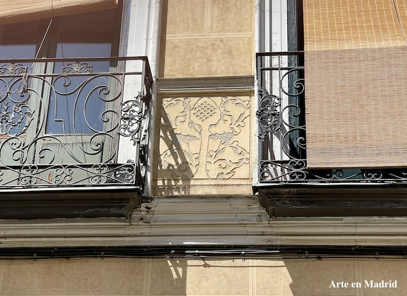 La rejería, los esgrafiados, etc.
Tomás de Miguel, Maestro Herrero calle de San Gregorio.
Tomás de Miguel El Vizcaíno fue un gran artista, el último Maestro Herrero y Cerrajero del Ayuntamiento de Madrid antes de que desapareciera este cargo.
Vidrieras.:
Banco de España | Escalera Imperial y sus vidrieras de estilo simbolista
vidrieras de estilo simbolista que diseñó para el edificio la Casa Mayer de Múnich, uno de los talleres de vitrales más prestigioso en la Europa de la segunda mitad del siglo XIX y cuya abundante producción de obras destinadas a España

Manolo Laguillo. Vidriera de la Casa Mayer del techo de la caja de escalera con la diosa Fortuna rodeada por los cinco continentes, las Tres Gracias y las Parcas Serie Adaro: un estudio de caso (2021). Colección Banco de España
La diosa Fortuna, deidad romana asociada al azar, a la buena y mala suerte, preside la gran vidriera que se halla sobre el hueco de la escalera, donde a su vez se representa el mito de «El Rapto de Europa», alegorías de los otros cuatros continentes y, en sus dos extremos, las Tres Gracias y las Parcas.

Boceto preparatorio para la vidriera de la Fortuna. Mayer’sche Hofkunstanstalt GmbH - Archivo Casa Mayer Múnich Vidriera de la Fortuna que cubre la escalera principal del Banco de España

Amor y Felicitas (1890) Casa Mayer
Fue la Casa Mayer que contaba con un taller de vitrales en Múnich desde 1862, la firma encargada de realizar estas vidrieras.

Escalera imperial de la sede central del Banco de España

Escalera imperial desde la rotonda que actualmente conecta el edificio del siglo XIX con la ampliación de Yarnoz.

Escalera del Banco de España | Medallones en yeso de la diosa Fortuna y el dios Mercurio situados en la escalera principal

Banco de España | vidriera del Patio de Operaciones
Primero, para el edificio primitivo se realizó un ciclo por la Casa Mayer de Múnich. Posteriormente en la ampliación proyectada por Yarnoz la Casa Maumejean realizó uno de los conjuntos de vidrieras art déco más relevantes de Europa.

Banco de España abre sus puertas para mostrar su patrimonio | Traveler
Banco de España Sucesivas ampliaciones -fcoam.eu
Banco de España abre sus puertas para mostrar su patrimonio | Traveler
Vidrieras Madrileñas - siglos XIX y XX - Cuarta Parte | PPT
Casa Palacio de Tomás de Allende Calle Mayor 72
(No confundir con Casa Allende en plza Canalejas) mismo dueño
construida en 1864, sede de la Junta Municipal del Distrito Centro
vidrieras de la Casa Mauméjean
Casa Palacio de Tomás de Allende Calle Mayor 72 -youtube
Palacios de Velázquez y Cristal obra de Ricardo Velázquez Bosco
Ambas construcciones están inspiradas en el Crystal Palace de Londres
Escuela de Ingenieros de Minas y Energía.: Escalera, el Museo Histórico Minero Don Felipe de Borbón y Grecia —una extraordinaria colección de minerales, fósiles, piezas de arqueología minera y diferentes instrumentos—, el claustro, la Biblioteca Histórica, y el Salón de Actos, sala que conserva vidrieras de la casa Maumejean, lámparas Art Nouveau y diferentes estucos.
Con cerámica de las fachadas laterales, obra de Daniel Zuloaga
Palacio Longoria La cúpula de vidrio emplomado que hace de lucernario, obra de la prestigiosa empresa francesa Maumejean
José y Enrique Mauméjean Vidrieros PDF
1901, el taller se trasladó a unas instalaciones propias mucho más amplias y lujosas, situadas en el paseo de la Castellana, donde permaneció hasta la década de 1930, cuando se reubicó en la calle Zabaleta.
Joseph Jules Mauméjean | casa de vidriería artística | Real Academia de la Historia
Parques, jardines y Fuentes.:
Los 7 Parques históricos de Madrid
#1 Dehesa de la Villa
#2 Jardines de la Plaza de Oriente
#3 Parque Quinta Los Molinos esmadrid.com
#4 Parque de la Fuente del Berro madridconencanto-siema
Parque del Oeste
Cuesta de los Ciegos Fuente con un escudo de la ciudad de la Segunda República (1932), con la corona mural y el antiguo escudo madrileño.
Fuente del Berro | Arte en Madrid

La Fuente del Rio Lozoya c/Bravo Murillo 49
La fuente fue diseñada por Juan de Ribera Piferrer. Una fontana en homenaje al río que daba de beber a la ciudad: una alegoría del río Lozoya y fue ejecutada en 1858 a cargo de Sabino de Medina Bravo Murillo 49, adosada a uno de los muros del Primer Depósito del Canal Isabel II.
Fuente del río Lozoya Trazado por el ingeniero Juan de Ribera Piferrer (-1880)
que la concibió como un arco de triunfo clásico, en cuya hornacina central figura una monumental personificación del río Lozoya tallada por el escultor madrileño Sabino de Medina Peñas (1814-1879) flanqueada a la izquierda por una imagen de la Agriculturadel escultor compostelano Andrés Rodríguez y a la derecha por otra de la industria del madrileño José Pagniucci Zúmel (1881-1868)

Fuente de Santa Isabel C. de Sta. Isabel 48 | Arte en Madrid
Fuente de Juan de Villanueva Paseo de Camoens del Parque del Oeste
Fuente del Cielo elaborada en mármol de makauba donde el agua sale suavemente por los surtidores y se desliza por el mármol blanco. El nombre viene porque se inspira en el Cielo de Madrid.
Fuente de Platerías Martínez se encuentra en la plaza de Platería de Martínez.
se levantó en 1999 sobre el solar de la antigua Platería de Martínez, bello edificio neoclásico construido en 1792 y derribado a finales del siglo XIX.
Fuente de Orfeo La fuente de Orfeo original es del año 1629, realizada sobre un diseño el arquitecto Juan Gómez de Mora y ejecución de Gaspar Ordóñez, la actual es una réplica del año 1998.
ubicada en la plaza de la Provincia en frente al Palacio de Santa Cruz
Fuente del Águila
Fuente del Águila Real Sitio de la Casa de Campo
Fuente del Águila anteriormente en la Casa de Campo de Madrid, situada en el patio central de la Casa de la Compaña | El Escorial
Fuente del Águila La fuente original en mármol de Carrara sin el águila bicéfala en el último vaso, se encuentra en la Galería de las Colecciones Reales desde junio 2023. Conserva las cuatro águilas bicéfalas del pilón.
Fuente de la Cruz Verde, la figura de Diana Fuente en la Plaza de la Cruz Verde.- Situada en la calle de Segovia, data del año 1850
Jardines del Palacio del Principe Anglona
Fuentes y estanques del Arquitecto Manuel Herrero Palacios
Fuente Puerta del Sol 1950 Hoy en Vallecas
Fuente mural homenaje al doctor Jaime Ferrán c/ Princesa situada al pie de un conjunto con doble escalinata que salva el desnivel entre esta calle y la plaza de Cristino Martos.
Las Grutas del Jardín de Felipe II | Casa de Campo
Fuente de la Fama Está en el jardín del Museo de Historia (Tribunal). Lleva tapada desde el inicio de las obras (2002)
Fuente de la Fama Estuvo en el Parque del Oeste
Los Caños del Peral Metro de Madrid | Ópera
Fuente de los Caños del Peral Plaza de Isabel II (Ópera)
Fuente en la Plaza de la Cruz Verde Situada en la calle de Segovia, data del año 1850
Jardines del Palacio del Principe Anglona
Jardines del Campo del Moro miradormadrid.com
Jardines del Campo del Moro es.wikipedia
Jardines del Campo del Moro abiertos dos nuevos accesos
Jardines de los Palacios de la Finca Vista Alegre Reserva.: | Comunidad de Madrid
Jardines secretos
Fuentes del Prado |Apolo |Cibeles |Neptuno web.archive.org
Fuente de los Delfines C/ Hortaleza con la C/ Santa Brígida, con dos delfines entrelazados en piedra blanca de Colmenar y de granito en la estructura
Fuente de los Delfines calle de Hortaleza esquina a la calle de Santa Brígida
Fuente de los Delfines calle de Hortaleza esquina a la calle de Santa Brígida
Fuente de los Caballos Marinos de la Quinta de Vista Alegre
Fuente de los Caballos Marinos de la Quinta de Vista Alegre
fue instalada después de 1858, por encargo del marqués de Salamanca, frente a la puerta principal del Palacio Nuevo en la Quinta de Vista Alegre, en el lugar donde antes estuvo la Fuente de las Conchas...
Fuente Juan de Villanueva Parque del Oeste
Fuente Juan de Villanueva Mejora sala de máquinas
Fuente de los Tritones | Jardines del Campo del Moro
Fuente de los Tritones | Jardines del Campo del Moro abiertos dos nuevos accesos
Fuente de los Tritones | Jardines del Campo del Moro | Palacio Real de Madrid
Fuente de las Conchas | Jardines del Campo del Moro patrimonioypaisaje.madrid
Fuente de las Conchas | Jardines del Campo del Moro viendomadrid.com
Una decena de fuentes y estatuas de la capital duermen en el trastero municipal
Fuente vecinal de Plaza de San Ildefonso Fuentes de Madrid
La Fuentecilla calle de Toledo | La Latina
monumento dedicado a FERNADO VII el más felón de todos los Borbones
Estatuas y Fuentes Paseo del Prado
Fuente de Apolo Paseo del Prado juancato.es
Fuente de Apolo | Cuatro estaciones Paseo del Prado miradormadrid.com
Cuatro Fuentes o Las Fuentecillas | Ventura Rodríguez en 1781 Paseo del Prado
Las Cuatro Fuentes también conocidas como Las Fuentecillas Paseo del Prado
El Paseo del Prado y el Buen Retiro: Patrimonio Mundial UNESCO Urbanity
Fuente de Neptuno Paseo del Prado
Fuente de la Cibeles Paseo del Prado

Fuente de la Cibeles Paseo del Prado -miradormadrid.com
Fuente de la Cibeles El dragón (grifo) y el oso que desaparecieron -Paseo del Prado

Fuente de la Cibeles web.archive.org
Calle Alcalá, con la Cibeles en su antiguo emplazamiento, 1857
fue diseñada por Ventura Rodríguez e instalada en la plaza que lleva su nombre en 1782. En un principio no se colocó en el centro de la plaza, sino que estaba de espaldas al Palacio de Buenavista (actual Cuartel General del Ejercito) mirando a la fuente de Neptuno. No fue hasta 1895 cuando se colocó en el centro de la Plaza, tal y como está hoy. Como puede verse, en su emplazamiento original la fuente no llevaba aún los dos angelotes en la parte trasera del carro, que le fueron agregados cuando se cambió su emplazamiento. El edificio que aparece tras ella es el actual Cuartel General del Ejercito (Palacio de Buenavista).
Fuentes de la Puerta del Sol

Siete fuentes ornamentales homenajearán a las estrellas del escudo de Madrid y recrearán la trayectoria de la Osa Mayor de oeste a este
Estanque de granito con tres surtidores verticales Frente Ministerio de Sanidad y el Museo del Prado al otro lado del paseo
Estanque de Recoletos | Mariblanca artedemadrid
Estanque de Recoletos | Mariblanca diario.madrid.es
Jardines de Pablo Sorozábal Príncipe de Vergara 138
Parque dedicado al compositor Pablo Sorozábal, con una escultura de un tablero de ajedrez gigante.
enfrente del Auditorio Nacional y junto a la Colonia Cruz del Rayo. En el jardín hay un busto del compositor. Estos jardines albergan el Parque del Ajedrez denominado “El Sueño de lo Imposible”, inaugurado el 26 de septiembre de 2015, obra del escultor Gustavo Herrera. La instalación consta de un tablero gigante con las 32 figuras del ajedrez y seis esculturas gigantes: el rey, la reina, un peón , una torre, un caballo y un alfil, que se iluminan con leds.
Finca Vista Alegre: palacios, rías y jardines románticos
Palacio de Vista Alegre (dentro Finca de Vista Alegre) wikipedia.org
Quinta de Vista Alegre twitter madrida360
Quinta de Vista Alegre madrida360
Quinta de Vista Alegre rehabilitación del Palacio
Quinta de Vista Alegre Marqués de Salamanca
Quinta de Vista Alegre BIC artedemadrid
Quinta de Vista Alegre artedemadrid
Finca de Vista Alegre llegó a ser Real Sitio Capilla
Finca Torre Arias: la finca histórica que Madrid heredó de una condesa
#5 Jardines de Sabatini
#6 Parque El Capricho de la Alameda de Osuna
Parque El Capricho de la Alameda de Osuna un parque “histórico”
Parque de El Capricho urbanity.one
Parque de El Capricho Visita, horarios, consejos... (2021)
Parque de El Capricho Antonello Dellanotte
Templete elíptico | Parque de El Capricho
Escultura del dios Dioniso-Baco en el templete elíptico del parque de El Capricho
Ayto. retoma las obras para convertir en museo el Palacio del Capricho
Así será el nuevo museo que nos hará recorrer el Madrid ilustrado del siglo XVIII La transformación del Palacio de El Capricho en un museo ofrecerá un recorrido por la vida y la cultura de la nobleza ilustrada de la capital
Rehabilitación del Palacio de los Duques de Osuna: Nuevo Museo en Madrid para 2027 (abrir siempre en Firefox)
Goya y Lucientes, Francisco de | retrato juvenil de Mariano y Pedro Téllez Girón, nietos de los duques de Osuna
1937 se proyectaron en Madrid cincuenta y seis refugios antiaéreos
Búnker Colmenar de Arroyo | Blockhaus -13 Forma parte de la ruta de los fortines y el museo al aire libre de la guerra civil que podemos encontrar en Navalagamella en Madrid. Este fortín en concreto destaca por su singularidad y dimensiones.
En el museo al aire libre encontramos un carro T 26 , y cañón de 88 mm y un antitanque de origen alemán.
Búnker del Parque del Capricho esmadrid.com
Búnker del Parque del Capricho Visita virtual 360º | El Búnker del General Miaja
Los fortines de la Mata Espesa Bunker Guerra Civil en Valdebebas
Búnker del Parque del Capricho esmadrid.com
Búnker del Parque del Capricho reservaspatrimonio.es
Búnker del Parque del Capricho Visita virtual 360º | El Búnker del General Miaja
Búnker del Parque del Capricho traveler.es
Búnker del Parque del Capricho visita guiada traveler.es
Plaza de Colón y Jardines del Descubrimiento
Parque de El Retiro.:
Parque de El Retiro miradormadrid.com
#7 Jardines del Buen Retiro
Historia y anécdotas sobre los orígenes del Retiro
El Retiro, Huerto del Francés miradormadrid.com
El Retiro, Huerto del Francés google.maps
La Casita del Pescador: Un cuento en el Retiro secretosdemadrid.es
Estatuas, jardines, edificios
El Retiro | Estatuas, jardines, edificios google.maps
Fuente de las Campanillas El Retiro
Fuente de la Alcachofa El Retiro
Fuente /Estanque de las Campanillas | El Retiro

Fuente egipcia o Fuente de las Esfinges Parque del Retiro
Fuente egipcia o Fuente Egipcia del Dios Canopo Parque del Retiro -es.wikipedia

A los pies de la catedral de la Almudena se ubica el Parque de Mohammed I se llama así por el Emir de Córdoba que mandó fundar Mayrit (recordemos que Madrid es la única capital europea fundada por musulmanes).
La Casa del Contrabandista
La Casa del Contrabandista PDF
La Noria de la Casa del Contrabandista
Real Fábrica de Porcelana | desaparecida Ermita San Antonio de los Portugueses
conocida como Fábrica de La China, convertida en cuartel por los franceses en 1808, fue destruida por los ingleses durante la Guerra de la Independencia, dicen las malas lenguas que para evitar la competencia con su porcelana debido a la más alta calidad de la madrileña, considerada incluso mejor que la de Sévres
fueron hallados restos del sistema hidráulico que proporcionaba agua a la fábrica, dos albercas y sus norias. Una de las norias y su alberca han sido reconstruidas y actualmente pueden contemplarse en los terrenos antaño conocidos como Huerto del Francés
El Retiro, Huerto del Francés
Castillete del Retiro futuro Museo Meteorológico.
Castillete del Retiro fotos de Antonello Della Notte
Castillete del Retiro la controvertida reforma de la antigua sede de la AEMET
Monumento a Ruperto Chapí - Pº. Fernán Núñez
Escultores: Julio Antonio y Eduardo Capa Sacristán, 1917-1921
Las esculturas del parque de El Retiro
Monumento a los Hermanos Álvarez Quintero Parque de El Retiro
Las esculturas del parque de El Retiro
General Martínez Campos | Parque de El Retiro
Alfonso XII | Estanque de El Retiro
El Ángel Caído del Retiro | Ricardo Bellver (1885)
José Tomás (escultor) | fuente de los Galápagos (Retiro)
José Tomás (escultor) | fuente de los Galápagos (Retiro)
Monumento a Alfonso XII y su torre mirador
Hemiciclo de Columnas
Templete Árabe (estanque) Velázquez Bosco no existe
El Pabellón Árabe la joya arquitectónica perdida del Retiro
Salón de Reinos Los jardines del palacio del Buen Retiro (construido hacia 1630, reinando Felipe IV y demolido en tiempos de Fernando VII tras la Guerra de Independencia, y del que solo quedan como vestigio el Casón del Buen Retiro y el Salón de Reinos)
Salón de Reinos – Retiro
Salón de Reinos – Proyecto de rehabilitación
Ruinas de San Isidoro y San Pelayo litigio Ávila
Ruinas de la Ermita San Isidoro y San Pelayo estilo románico
Ruinas de la Ermita San Isidoro y San Pelayo historia
Ruinas de San Pelayo y San Isidoro
Montaña de los Gatos madrid.es
Montaña Artificial del Retiro | Montaña de los gatosEsta montaña artificial es uno de los caprichos del rey Fernando VII.
Los madrileños de la época la llamaron de los gatos, ya que durante un tiempo ellos fueron sus pobladores.
La montaña llevaba dieciocho años inactiva y la reforma comenzó en octubre de 2022, en ella se han descubierto hallazgos arqueológicos relevantes, así como un viaje de agua que conducía a una noria, anterior a la construcción del parque
Esta joya histórica se erigió bajo la dirección de Bernardino Berogán, quien proyectó diversas edificaciones en el parque de El Retiro, construidas por el arquitecto real Isidro González Velázquez, como la Casita del Pescador, la Casa del Contrabandista, la Casa del Pobre, la Casa Rústica, la Pajarera, la Casa de Fieras o el Embarcadero del Estanque Grande.
Montaña de los gatos Desde el 26 de julio, su uso será dedicado para exposiciones, como la actual, que da a conocer la historia de la montaña, así como el detalle de los trabajos que se han llevado a cabo para su recuperación integral, y también para actos culturales. Su horario es de 11 a 13 h y de 18 a 20 El acceso es por la la puerta de O, Donnell y Avd Menéndez Pelayo
Montaña Artificial | Parque del Retiro
Montaña de los gatos | Parque del Retiro reabrirá en mayo de 2023
Palacio de Velázquez Reportaje
Palacio de Velázquez Parque del Retiro
Primer transformador eléctrico de Madrid | Palacio de Velázquez
Existen 2 transformadores, ese creo es de la inauguración de la expo 1882, el primero. Luego se hizo el más nuevo.
Medallón de Juan de Herrera (Palacio de Velázquez) Las obras fueron diseñadas por Ricardo Velázquez Bosco, asistido por Antonio Palacios Ramilo y con paneles de azulejos de Daniel Zuloaga (tío del célebre pintor)
rendir homenaje a las artes y a dos ingenieros matemáticos del Renacimiento: Juan de Herrera, fundador de la primera Academia de Matemáticas y Juanelo Turriano, constructor del ingenio de abastecimiento de aguas a Toledo.
En la parte de atrás del palacio se encuentra el panel de azulejos alegóricos a la Arquitectura con instrumentos.
La arquitectura madrileña de Ricardo Velázquez Bosco
El Salón de Reinos – Retiro
El Palacio del Retiro que Napoleón arrasó: de Versalles 'cutre' a prostíbulo de Madrid
Casón del Buen Retiro – Retiro
Visitas guiadas a la Bóveda de Luca Giordano en el Casón del Buen Retiro
Palacio de Cristal - Retiro
El Salón de Reinos – Retiro
El Palacio del Retiro que Napoleón arrasó: de Versalles 'cutre' a prostíbulo de Madrid
Casón del Buen Retiro – Retiro
Visitas guiadas a la Bóveda de Luca Giordano en el Casón del Buen Retiro
Real Observatorio de Madrid (ROM) Parque del Retiro
Real Observatorio de Madrid (ROM) El último y más icónico edificio de Villanueva
Real Observatorio de Madrid historia de ayer y hoy
Parque del Retiro Entramos en el refugio antiaéreo bajo el parque del Retiro
Fuente del Faunito o del Fauno | Parque del Retiro
Fuente del Amorcillo o de Cupido | Parque del Retiro
El Ángel Caído del Retiro | Ricardo Bellver (1885)
Puerta de Dante
El PP pide ladrillos de memoria Stolpersteine en Retiro y PSOE la retirada de mojones dedicados al golpe militar de 1936 en la Puerta de Dante
Jardines Rosaleda | Parque del Retiro
Real Jardín Botánico de Madrid -artedemadrid
Jardín Botánico del Prado en 1781 | EL "HORTUS REGIUS MATRITENSIS"
Jardín Botánico | Invernadero-Palacio de Cristal Arganzuela
Quinta de Torre Arias
Quinta de Torre Arias wikipedia.es
Quinta de Torre Arias "Diana y Endimión", una escultura de terracota
Quinta de Torre Arias consolidación y restauración de los puentes y el muro
Quinta de los Molinos | Casa del Reloj
Quinta de los Molinos | Almendros
Parque Cerro del Tío Pío
Cerro Tio Pio Del barro al césped: el tiempo quedó enterrado bajo las Siete Tetas
Parque de Berlín: cumpleaños del Muro artículo nº 6

Parque Juan Carlos I - Mirador Madrid

Parque Juan Carlos I | Tren en el Parque Juan Carlos I gratuito
Primavera en los parques de la Comunidad de Madrid turismomadrid.es
Jardines del Príncipe de Anglona | Madrid de los Austrias
Invernadero del Palacio de Cristal de Arganzuela
Cabeza olmeca y pirámide azteca: México lindo de Vallecas a Barajas art nº 8
Cabeza Olmeca del Ensanche de Vallecas
Cabeza Olmeca del Ensanche de Vallecas google.maps
Restos viaje de Agua de la Castellana hacia llegar el agua a 11 fuentes, es del siglo XVII
Hotel NH Collection Madrid Palacio de Tepa
C. de San Sebastián, 2 Altura Iglesia calle Atocha arriba Iglesia San Sebastián
Palacio del Conde de Tepa | Viaje de Agua de la Castellana
Casa de Campo.:
Puerta del Carmen (Pabellón de Zaragoza) Feria del Campo -googlemaps
Puerta del Carmen (Pabellón de Zaragoza) La Puerta del Carmen fue reproducida fielmente en 1956 para la Feria del Campo que tenía lugar en la madrileña Casa de Campo. el monumento formaba parte del pabellón de Aragón
Taller de Cantería, Casa de Campo
Taller de Cantería, Casa de Campo Fuente de Callao
Repartidor de Aguas casilla neo-mudéjar
Repartidor de Aguas memoriademadrid.es
Palacio de los Vargas | Casa de Campo miradormadrid.com
Palacio de los Vargas (Casa de Campo) es.wikipedia
Casa-Palacio de los Vargas | Casa de Campo rehabilitación
Casa de los Vargas | Gruta del Jardín de Felipe II | Casa de Campo
Pabellón de los Hexágonos: del abandono a una exposición permanente | Casa de Campo
Puente de la Culebra - Sabatini
Puente de la Culebra - Sabatini | Casa de Campo
Acueducto de Sabatini | de la Partida | Casa de Campo Francesco Sabatini en 1778, bajo el reinado de Carlos III
Fuente del Águila
Fuente del Águila Real Sitio de la Casa de Campo
Fuente del Águila anteriormente en la Casa de Campo de Madrid, situada en el patio central de la Casa de la Compaña | El Escorial
Las Grutas del Jardín de Felipe II | Casa de Campo
Lacasadecampo.es
Acto de entrega de la Casa de Campo al Ayuntamiento de Madrid
Entrega de La Casa de Campo al pueblo de Madrid
El Parque Real a la Villa de Madrid por parte del Mtro. de Hacienda Indalecio Prieto al Alcalde Pedro Rico López para disfrute de los madrileños.
6 de mayo de 1931 -youtube
Restaurantes, cafés y Terrazas:
Alto del León | Asadores Restaurantes en Guadarrama y Sierra de Madrid
Restaurantes Centenarios
Clásicos Restaurantes, tabernas, hoteles, cafés, coctelerías…
LHARDY Carrera de San Jerónimo, 8
HORCHER Alfonso XII, 6
HORCHER punto de encuentro de la élite nazi en Madrid
Bares y tabernas
Taberna Pedraza C. de Recoletos, 4
Conocida por su tortilla de patatas de Betanzos, croquetas de jamón ibérico, tigres de marisco gallego
Taberna Pedraza Google Maps
Rocablanca famoso por sus churros y por sus croquetas -Fuencarral 71
Mapa con 30 lugares donde tomar buenas croquetas en Madrid googlemaps
Taberna La Cruzada – La Taberna mas antigua de Madrid | Cocido c/ Amnistía 8 (Opera)
Bodega de la Ardosa c/ Colón 13 (Tribunal) vermú casero con su anchoa | tortilla de patata
Casa Alberto c/ de las Huertas 18 (Huertas)
Casa Dani Mercado de la Paz c/ Ayala, 28 (Serrano/Colón) Mejor tortilla de patatas de España
La mejor tortilla de patata de Madrid es Castiza (con mayúsculas)
Simón García, de La Tortilla Castiza Ribera de Curtidores, 26
gana el Concurso de la Mejor Tortilla de Patata de la Comunidad de Madrid 2025
Docamar Las mejores bravas de Madrid | C/ Alcalá 337 | Metro Pueblo Nuevo
Las mejores bravas de Madrid | Viviendo Madrid
Los bares con las tapas gratis más generosas de Madrid
7 pequeños grandes templos gastronomicos en Madrid
15 restaurantes de moda en Madrid que debes conocer
Casa González C. del León 12
Charcutería fundada en 1931 que vende quesos, vinos y embutidos de la región
Casa del Pulpo / Meson Los Gallegos Usera -googlemaps
Honest Greens Calle de Hortaleza 100
Honest Greens Menu
Taberna DNorte Calle Mesonero Romanos, 8 . Hotel Dos Castillas
La Sanabresa Calle Amor de Dios, 12 (Huertas) Antón Martín
La Sanabresa Comida casera
Restaurante La catedral Cra. San Jerónimo, 26
Taberna Alhambra Calle Victoria 9 / por Calle de la Cruz /plz Canalejas
Restaurante Excalibur Calle Martin de los Heros 28
Restaurante La Favorita | cantan Ópera C/ de Covarrubias, 25 | Zona Alonso Martinéz
LA CORAZONADA Ribera de Curtidores, 30
Jamal, un marroquí de Casablanca afincado en Madrid y su mujer Anabel, de Arévalo Chuletón de Ávila para dos y ensaladilla rusa
Gildas: el famoso pincho de San Sebastián con guindilla, aceituna y anchoa
Los Clásicos de Cocituber Oreja a la plancha en vallecas Cam. de la Suerte 42
Tabernas-Restaurantes
Restaurantes
Qué hacer hoy en Madrid - Planes y restaurantes
Guanabaramad | Rodizio C. de Medea, 4 | Suanzes
Restaurante El Camoatí en La Latina La Carta | Calle de Alfonso VI, 3
fusiona elementos de la cocina criolla argentina, la cocina italiana y francesa
Los 9 cortes de carne argentina cortes parrillada argentinos
Picanha o Picaña: el corte de carne (tapilla en España) que todo el mundo quiere probar
cortes parrillada argentinos, brasileños, uruguayos e italianos
Bondiola | cabeza de lomo cortes parrillada argentinos
Los mejores restaurantes mexicanos de Madrid
Restaurante Bodega de los Secretos Calle San Blas, 4 (metro Atocha)
Restaurante Bodega de los Secretos traveler.es
Restaurante Bodega de los Secretos Reserva
Los restaurantes más románticos de Madrid | Traveler
DEL DIEGO Cocktail Bar reputado Internacional | Reina, 12
CASA SALVADOR Ava Gadner | Barbieri, 12
ASTURIANOS Vallehermoso, 94
Sidrería Restaurante Asturiano Couzapín Calle Menorca 33 (Retiro)
Restaurante El Ñeru abre 12:00 915 48 19 77 C. de Bordadores, 5
Cocina asturiana
Casa Hortensia (dentro del centro cultural Casa Asturias) C. de la Farmacia 2
fabada, cachopo, fabes almejes y su cabrales con sidra
Casa Hortensia facebook
La Pomareda C. del Conde Duque, 3
Cachopos
CASA AMADEO LOS CARACOLES Plaza de Cascorro, 18
Cruz Blanca de Vallecas | Antonio Cosmen C/ Carlos Martín Álvarez 58 (91 477 34 38)
Balamo Alcorcón
Dónde comer en Alcorcón, la nueva “terremoto” de la gastronomía Alcorcón
Taberna del Volapie
BRASAYLEÑA CC OASIZ | Rodizio jueves 19:00 2x1
La Fontana de Oro C/ Victoria, 1 (Puerta del sol) Música en directo
La Finca de Susana C/Del Príncipe, 10 | 913 693 557
La Gloria de Montera C/Caballero de Gracia, 10 | 915 234 407
Con 2 Fogones C/Calle de San Bernardino 9
Bazar C/Libertad, 21 | 915 233 905
Ginger Plaza del Angel, 12 | 913 691 059
Eddelweiss C/Jovellanos 7 | 915 323 383
Opera Victoria C/Caños del Peral, 2 | 918 313 489
La Chalana Barceló Marisquería Restaurante 915 48 83 95
La Chalana: Marisquería Restaurante c/ Santo Domingo de Silos 6
918 291 359

Understreet Market: un nuevo rincón gastronómico se suma al mapa de La Latina.
calle del Nuncio 19, en la recién bautizada como Plazuela de Jesús el Pobre.
Understreet Market: calle del Nuncio 19 -googlemaps
REVOLTOSA | Gatos Curiosos Calle del Prado, 4
Planes findes
Rincón de la Cava mesón bajo la Plaza Mayor
La Negra Tomasa la cubana madrid. Restaurante Espectáculo en Madrid
Madrid Barrio a Barrio: El Madrid gastronómico -youtube
La mejor tortilla de Madrid -en Sylkar Calle de Espronceda, 17
Empanadas Zabala EMPANADA DE HOJALDRE de Bonito del norte
Paseo de Perales, 4
Empanadas Zabala - Empanada de hojaldre con bonito del Norte
Empanadas Zabala - Empanada de hojaldre con Atún
Casa Labra - Bacalao - calle Tetuán 12
Casa Revuelta - Bacalao - calle Latoneros 3
Los 5 mejores Restaurantes, Tabernas, tapas
El Quinto Sabor la mejor tapa de toda la Comunidad de Madrid:
Avenida Quitapesares, 17 - Villaviciosa de Odón
Dónde comer oreja ese manjar madrileño -Madrid Secreto
Bar-Restaurante Padrao Grandes tapas con la cerveza. Travesia de la Parada, 4
El Kiosko Madrid X Alcorcón
Bocata calamares con kimchi coreano y pan negro de tinta de calamar
El Invernadero Secreto de Salvador Bachiller Gran Via 65| brunch
El Jardín Secreto de Salvador Bachiller Montera 37 Planta 3ra| terraza / café
El Rincón Secreto de Salvador Bachiller Alcalá 151| salón de té inglés
Bloom de Salvador Bachiller Alberto Aguilera 54| terraza-jardín
Comer en Madrid: Los Restaurantes / Cafés que no te puedes perder Petiscosgalegos
La Pecera (Círculo de Bellas Artes) Restaurante
Asador Limbo Tribunal Asador Pollo
Siete restaurantes chinos imprescindibles en Madrid:
Hong Kong 70 Restaurante chino C/ Nicolás Sánchez, 11 Metro Usera
Hong Kong 70 Restaurante chino PDF menú
Shangrila DimSum cocina asiática c/ Leganitos 26
Sichuan Kitchen Restaurante chino C/ del Maestro Guerrero 4
Sichuan Kitchen detrás Edificio España Princesa, comida picante de Sichuán
Bammbao Restaurante Chino Nicolás Sánchez 54 Usera
Coliflor con salsa picante y salsa brava
Bao de pollo empanizado es picante
SILK Madrid Cocina japonesa | P.º del Gral. Martínez Campos, 43
SILK Madrid Menu del día
comida asiática os recomendamos Kabuki Wellington (Calle Velázquez 6)
Wonderland Restaurante - The Kaiten Lab Sushi - - Ambientado en Alicia en el País de las Maravillas
Il Tiramisu Restaurante italiano -Móstoles
La Tagliatella Restaurante italiano -Peperorcino gamberi con Pasta Tagliatelle
Restaurantes bonitos de Madrid dignos de Instagram Traveler
El Mirador de Pelayos Mirador pantano San Juan -googlemaps
Arroz al senyoret +croquetas
Cafeterías.:

Gran Café El Espejo (Art Nouveau) P.º de Recoletos 31
El mejor café de Madrid | Don't Stop Madrid
Las mejores cafeterías para empezar el día en Madrid | traveler.es
Novo Mundo Cafetería | croissant mixto| C/ Carnero 9 esq c/Arniches | Rastro
Hola Coffee (número 12 mundial The World´s 100 Best Coffee Shops 2025, el primer ránking que reconoce las mejores cafeterías de especialidad del mundo.
c/ Lagasca, 42 (Barrio de Salamanca) c/ Doctor Fourquet, 33 (Lavapiés) Tostadero.: C. de Sepúlveda, 109

¿Adiós al Café Gijón (tal y como lo conocemos)?
El emblemático Gran Café Gijón de Madrid ha cerrado sus puertas para ser reformado y reabrirá en 2026 como parte del grupo de lujo Cappuccino. El local que frecuentaron Valle-Inclán, Lorca, Cela, Buero Vallejo, Fernando Fernán-Gómez, Paco Umbral, Orson Welles (que llevó alguna vez a Joseph Cotten), Gerardo Diego…
15 cafeterías en Madrid que no te puedes perder
Cafés
Terrazas
6 terrazas de Madrid desde las que disfrutar mucho más que las vistas - Madrid Secreto
3 Terrazas top para tardeo, con entrada gratis
Le tavernier C. de Mesonero Romanos, 13, 8ª Planta , Gran Vía
Le tavernier tripadvisor.es
La Terraza de Óscar Pl. de Pedro Zerolo, 12
La Terraza de Óscar tripadvisor.es
El jardín de Diana c/ Gran Vía, 31, planta 10
El jardín de Diana tripadvisor.es
Terraza planta 26 Hotel Riu Plaza España telemadrid.es
Terraza planta 26 Hotel Riu Plaza España guiarepsol.com
Terraza Azotea Circulo Bellas Artes
 Chocolatería de San Ginés Pasadizo de San Ginés 5
Chocolatería de San Ginés Pasadizo de San Ginés 5  Churrería Antonio de Vallecas famosas ranas (porras abiertas fritas con anís, canela y azúcar)
Churrería Antonio de Vallecas famosas ranas (porras abiertas fritas con anís, canela y azúcar)Cl. de la Sierra Vieja 75 - Villa de Vallecas
Pastelerias y Heladerías.:
Bibì e Bibò Heladería artesanal italiana C/ Joaquín Bau (Plz. Castilla)
Gelato Lab Heladería artesanal Mercado de la Cebada Puesto 37/38, planta baja
ZÚCCARU Heladería Siciliana Calle Vergara 16 Metro Opera
Calle Palafox 20 Metro Quevedo, al lado de la Plaza de Olavide
Helados con Alcohol The Cocktail Ice Society |
Gelateria La Romana C. de San Bernardo, 96 (3 franquicias)
Taza de chocolate caliente con una bola de helado en su interior. Se llama Affogato italiano este postre, aunque el original es de café
Heladeria Los Alpes -helados artesanales/horchata unico sitio Madrid Consejo Regulador Valencia
Santa Eulalia Boulangerie Patisserie Cafeteria - Pasteleria francesa
El Riojano, pastelería tradicional madrileña desde 1855 Mayor 10
Estela Hojaldre Pl. Jesús, 5, (Jesús del Gran Poder)
Estela Hojaldre Estela Gutiérrez: El mejor hojaldre de España lo hace una cántabra en Madrid
Antigua Pastelería del Pozo Calle Pozo | Sol
Museo del pan Gallego plaza de Herradores 9
En 1735, un tahonero de Auvernia (Francia) estableció una tahona en la plaza de Herradores (entre Mayor y Arenal)
RÁNKING PANADERÍAS | los 50 panaderos Top de España
Comunidad de Madrid.:
Significado de los símbolos de la Comunidad de Madrid
Bandera Comunidad de Madrid Diseño de Cruz Novillo
Himno de la Comunidad de Madrid del gran latinista y poeta anarquista Agustín García Calvo
Turismo en la Comunidad de Madrid
MCyP | Asociación defensa patrimonio histórico, artístico, cultural, social y natural de la CAM
Las huellas que Roma dejó en la Sierra de Guadarrama
Monasterio de Santa María de El Paular Retablo gótico en alabastro que preside la iglesia
Monasterio de Santa María de El Paular
Una aldea española rodeada por galos y otros enclaves
7 destinos en la naturaleza para visitar cerca de Madrid Cárcavas del Valdepeñas de la Sierra
Las Caras de Buendía
Bosque de Finlandia, Rascafría
Castillo de Alpedrete
Sierra Norte de Madrid
Chorro de Somosierra | Chorrera Litueros
Chorro de Somosierra youtube.com
Las mejores zonas de baño naturales cerca de Madrid
Piscinas de Las Berceas de Cercedilla Reservas
Piscinas de Las Berceas de Cercedilla
La piscina más grande de Madrid junto al pantano en Buitrago de Lozoya | Riosequillo
ruta por el Hayedo de Tejera Negra
Chorrera de Mojonavalle
Chorrera San Mames
Chorros del Manzanares
Ducha de los Alemanes
La Casa de la Horca
Sierradelrincon.org
Rutasserranas.net -Madrid
Valle de la Fuenfria
Laguna Peñalara -ruta
El Valle de los Neandertales E.I.P.V
Trotamontes.org -excursiones
17 pueblos con encanto cerca de Madrid que debes visitar en septiembre
Rutas culturales para personas mayores 2023 Comunidad de Madrid
86.000 personas han participado ya en el programa de Rutas Culturales para Mayores 2022
Rutas culturales para personas mayores Comunidad de Madrid
El arte contemporáneo inunda la Sierra Norte de Madrid
Ruta de los Trampantojos en Navalcarnero
Alcalá de Henares.:
Turismo en Alcalá de Henares museos, monumentos y rutas turísticas
Turismo Alcalá de Henares facebook
Palacio de Laredo . : 91 885 64 87 turismoalcala.es
Palacete de Laredo . : 91 885 64 87 madrid.org
Museo Arqueológico Regional
Paraninfo de la Universidad de Alcalá de Henares 1994 reforma suelo
Paraninfo de la Universidad de Alcalá de Henares 1994 reforma artesonado
Corral de la Comedia miercoles a domingo
Ciudad Romana de Complutum | Alcalá de Henares
Alcalá de Henares más allá de Cervantes
Capilla San ildefonso Alcala de Henares
Capilla San ildefonso Alcala de Henares turismoalcala.es
Capilla San ildefonso Alcala de Henares | El sepulcro del Cardenal Cisneros
Museo Arqueológico Regional Alcalá de Henares
El Escorial.:

Qué ver en El Escorial: la octava maravilla del mundo

 Claustro de los Evangelistas del Real Monasterio de San Lorenzo de El Escorial
Claustro de los Evangelistas del Real Monasterio de San Lorenzo de El EscorialEl templete dórico del centro alude a la fuente de la Gracia y de la vida espiritual
Lo estamos restaurando con Fondos Europeos para abrirlo al público este verano